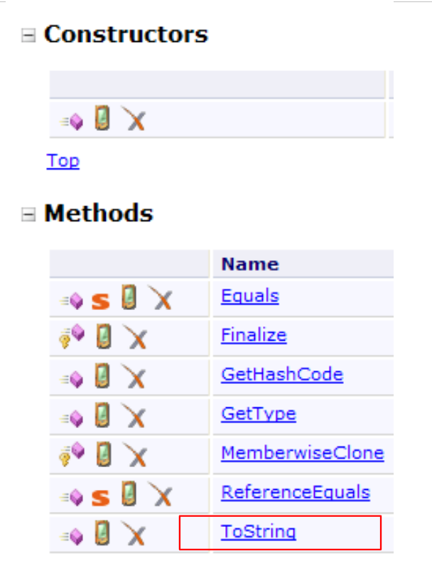

4. Classes, Estruturas, Interfaces
4.1. O objeto através do exemplo
4.1.1. Noções gerais
Vamos agora abordar, através de exemplos, a programação orientada a objetos. Um objeto é uma entidade que contém dados que definem o seu estado (chamados de campos, atributos, etc.) e funções (chamadas de métodos). Um objeto é criado de acordo com um modelo chamado de classe:
public class C1{
Type1 p1; // campo p1
Type2 p2; // campo p2
…
Type3 m3(…){ // método m3
…
}
Type4 m4(…){ // método m4
…
}
…
}
A partir da classe anterior C1, é possível criar vários objetos O1, O2,… Todos terão os campos p1, p2, … e os métodos m3, m4, … Mas terão valores diferentes para os seus campos pi, tendo assim cada um um estado que lhes é próprio. Se o1 for um objeto do tipo C1, o1.p1 designa a propriedade p1 de o1 e o1.m1 o método m1 de O1.
Consideremos um primeiro modelo de objeto: a classe Personne.
4.1.2. Criação do projeto C#
Nos exemplos anteriores, tínhamos apenas um único ficheiro de código-fonte num projeto: Program.cs. A partir de agora, poderemos ter vários ficheiros de código-fonte num mesmo projeto. Mostramos como proceder.
 |
Em [1], crie um novo projeto. Em [2], selecione «Application Console». Em [3], mantenha o valor predefinido. Em [4], confirme. Em [5], encontra-se o projeto que foi gerado. O conteúdo de Program.cs é o seguinte:
using System;
using System.Collections.Generic;
using System.Linq;
using System.Text;
namespace ConsoleApplication1 {
class Program {
static void Main(string[] args) {
}
}
}
Vamos guardar o projeto criado:
 |
Em [1], a opção de guardar. Em [2], indique a pasta onde guardar o projeto. Em [3], atribua um nome ao projeto. Em [5], indique que pretende criar uma solução. Uma solução é um conjunto de projetos. Em [4], atribua um nome à solução. Em [6], confirme o armazenamento.
 |
No [1], o projeto foi guardado. No [2], adicione um novo elemento ao projeto.
 |
Em [1], indique que pretende adicionar uma classe. Em [2], o nome da classe. Em [3], confirme as informações. Em [4], o projeto [01] tem um novo ficheiro de origem Personne.cs:
using System;
using System.Collections.Generic;
using System.Linq;
using System.Text;
namespace ConsoleApplication1 {
class Personne {
}
}
Alteramos o espaço de nomes de cada um dos ficheiros de código-fonte em Chap2 e eliminamos a importação dos espaços de nomes desnecessários:
using System;
namespace Chap2 {
class Personne {
}
}
using System;
namespace Chap2 {
class Program {
static void Main(string[] args) {
}
}
}
4.1.3. Definição da classe Pessoa
A definição da classe Personne no ficheiro fonte [Personne.cs] será a seguinte:
using System;
namespace Chap2 {
public class Personne {
// atributos
private string prenom;
private string nom;
private int age;
// método
public void Initialise(string P, string N, int age) {
this.prenom = P;
this.nom = N;
this.age = age;
}
// método
public void Identifie() {
Console.WriteLine("[{0}, {1}, {2}]", prenom, nom, age);
}
}
}
Temos aqui a definição de uma classe, ou seja, de um tipo de dados. Quando criarmos variáveis deste tipo, chamar-lhes-emos objetos ou instâncias da classe. Uma classe é, portanto, um molde a partir do qual são construídos os objetos.
Os membros ou campos de uma classe podem ser dados (atributos), métodos (funções) ou propriedades. As propriedades são métodos específicos que servem para conhecer ou definir o valor dos atributos do objeto. Estes campos podem ser acompanhados por uma das três palavras-chave seguintes:
Um campo privado (private) só é acessível através dos métodos internos da classe | |
Um campo público (public) é acessível por qualquer método, definido ou não no âmbito da classe | |
Um campo protegido (protected) só é acessível através dos métodos internos da classe ou de um objeto derivado (ver mais adiante o conceito de herança). |
Em geral, os dados de uma classe são declarados privados, enquanto os seus métodos e propriedades são declarados públicos. Isto significa que o utilizador de um objeto (o programador)
- não terá acesso direto aos dados privados do objeto
- poderá recorrer aos métodos públicos do objeto e, nomeadamente, àqueles que dão acesso aos seus dados privados.
A sintaxe de declaração de uma classe C é a seguinte:
public class C{
private donnée ou méthode ou propriété privée;
public donnée ou méthode ou propriété publique;
protected donnée ou méthode ou propriété protégée;
}
A ordem de declaração dos atributos private, protected e public é arbitrária.
4.1.4. O método Initialise
Voltemos à nossa classe Pessoa, declarada da seguinte forma:
using System;
namespace Chap2 {
public class Personne {
// atributos
private string prenom;
private string nom;
private int age;
// método
public void Initialise(string p, string n, int age) {
this.prenom = p;
this.nom = n;
this.age = age;
}
// método
public void Identifie() {
Console.WriteLine("[{0}, {1}, {2}]", prenom, nom, age);
}
}
}
Qual é a função do método Initialise? Uma vez que nom, prenom e age são dados privados da classe Personne, as instruções:
são inválidas. Temos de inicializar um objeto do tipo Personne através de um método público. É essa a função do método Initialise. Escreveremos:
A sintaxe p1.Initialise é válida, uma vez que Initialise é de acesso público.
4.1.5. O operador new
A sequência de instruções
está incorreta. A instrução
declara p1 como uma referência a um objeto do tipo Personne. Este objeto ainda não existe e, por isso, p1 não está inicializado. É como se escrevêssemos:
onde se indica explicitamente, com a palavra-chave null, que a variável p1 ainda não faz referência a nenhum objeto. Quando, em seguida, se escreve
estamos a chamar o método Initialise do objeto referenciado por p1. No entanto, esse objeto ainda não existe e o compilador irá sinalizar o erro. Para que p1 faça referência a um objeto, é necessário escrever:
Isto tem como efeito a criação de um objeto do tipo Personne ainda não inicializado: os atributos nom e prenom, que são referências a objetos do tipo String, terão o valor null, e age assumirá o valor 0. Existe, portanto, uma inicialização por predefinição. Agora que p1 faz referência a um objeto, a instrução de inicialização desse objeto
é válida.
4.1.6. A palavra-chave «this»
Vejamos o código do método initialise:
public void Initialise(string p, string n, int age) {
this.prenom = p;
this.nom = n;
this.age = age;
}
A instrução this.prenom=p significa que o atributo prenom do objeto atual (this) recebe o valor p. A palavra-chave this designa o objeto atual: aquele no qual se encontra o método executado. Como é que o sabemos? Vejamos como se realiza a inicialização do objeto referenciado por p1 no programa chamador:
É o método Initialise do objeto p1 que é chamado. Quando, neste método, se faz referência ao objeto this, está-se, na verdade, a fazer referência ao objeto p1. O método Initialise também poderia ter sido escrito da seguinte forma:
public void Initialise(string p, string n, int age) {
prenom = p;
nom = n;
this.age = age;
}
Quando um método de um objeto faz referência a um atributo A desse objeto, a notação this.A é implícita. Deve ser utilizada explicitamente quando existe um conflito de identificadores. É o caso da instrução:
this.age=age;
onde age designa um atributo do objeto atual, bem como o parâmetro age recebido pelo método. É então necessário eliminar a ambiguidade, designando o atributo age como this.age.
4.1.7. Um programa de teste
Eis um pequeno programa de teste. Este está escrito no ficheiro fonte [Program.cs]:
using System;
namespace Chap2 {
class P01 {
static void Main() {
Personne p1 = new Personne();
p1.Initialise("Jean", "Dupont", 30);
p1.Identifie();
}
}
}
Antes de executar o projeto [01], poderá ser necessário especificar o ficheiro fonte a executar:
 |
Nas propriedades do projeto [01], indica-se [1] como a classe a executar.
Os resultados obtidos na execução são os seguintes:
4.1.8. Outro método Initialise
Consideremos novamente a classe Personne e adicionemos-lhe o seguinte método:
public void Initialise(Personne p) {
prenom = p.prenom;
nom = p.nom;
age = p.age;
}
Temos agora dois métodos com o nome Initialise: isto é válido desde que aceitem parâmetros diferentes. É o que acontece neste caso. O parâmetro é agora uma referência p a uma pessoa. Os atributos da pessoa p são então atribuídos ao objeto atual (this). Note-se que o método Initialise tem acesso direto aos atributos do objeto p, embora estes sejam do tipo private. Isto é sempre verdade: um objeto o1 de uma classe C tem sempre acesso aos atributos dos objetos da mesma classe C.
Eis um teste da nova classe Personne:
using System;
namespace Chap2 {
class Program {
static void Main() {
Personne p1 = new Personne();
p1.Initialise("Jean", "Dupont", 30);
p1.Identifie();
Personne p2 = new Personne();
p2.Initialise(p1);
p2.Identifie();
}
}
}
e os seus resultados:
4.1.9. Construtores da classe Pessoa
Um construtor é um método que tem o nome da classe e que é chamado aquando da criação do objeto. É geralmente utilizado para o inicializar. Trata-se de um método que pode aceitar argumentos, mas que não devolve qualquer resultado. O seu protótipo ou definição não é precedido por nenhum tipo (nem mesmo void).
Se uma classe C tiver um construtor que aceite n argumentos argi, a declaração e a inicialização de um objeto dessa classe poderão ser feitas da seguinte forma:
ou
Quando uma classe C tem um ou mais construtores, é obrigatório utilizar um desses construtores para criar um objeto dessa classe. Se uma classe C não tiver nenhum construtor, dispõe de um construtor por defeito, que é o construtor sem parâmetros: public C(). Os atributos do objeto são então inicializados com valores por defeito. Foi isso que aconteceu nos programas anteriores, onde se escreveu:
Vamos criar dois construtores para a nossa classe Personne:
using System;
namespace Chap2 {
public class Personne {
// atributos
private string prenom;
private string nom;
private int age;
// construtores
public Personne(String p, String n, int age) {
Initialise(p, n, age);
}
public Personne(Personne P) {
Initialise(P);
}
// método
public void Initialise(string p, string n, int age) {
...
}
public void Initialise(Personne p) {
...
}
// método
public void Identifie() {
Console.WriteLine("[{0}, {1}, {2}]", prenom, nom, age);
}
}
}
Os nossos dois construtores limitam-se a chamar os métodos Initialise estudados anteriormente. Recorde-se que, quando num construtor se encontra a notação Initialise(p), por exemplo, o compilador traduz para this.Initialise(p). No construtor, o método Initialise é, portanto, chamado para atuar sobre o objeto referenciado por this, ou seja, o objeto atual, aquele que está a ser construído.
Eis um pequeno programa de teste:
using System;
namespace Chap2 {
class Program {
static void Main() {
Personne p1 = new Personne("Jean", "Dupont", 30);
p1.Identifie();
Personne p2 = new Personne(p1);
p2.Identifie();
}
}
}
e os resultados obtidos:
4.1.10. As referências dos objetos
Continuamos a utilizar a mesma classe Personne. O programa de teste fica assim:
using System;
namespace Chap2 {
class Program2 {
static void Main() {
// p1
Personne p1 = new Personne("Jean", "Dupont", 30);
Console.Write("p1="); p1.Identifie();
// p2 faz referência ao mesmo objeto que p1
Personne p2 = p1;
Console.Write("p2="); p2.Identifie();
// p3 refere-se a um objeto que será uma cópia do objeto referido por p1
Personne p3 = new Personne(p1);
Console.Write("p3="); p3.Identifie();
// altera-se o estado do objeto referenciado por p1
p1.Initialise("Micheline", "Benoît", 67);
Console.Write("p1="); p1.Identifie();
// como p2 = p1, o objeto referenciado por p2 deve ter mudado de estado
Console.Write("p2="); p2.Identifie();
// como p3 não aponta para o mesmo objeto que p1, o objeto a que p3 aponta não deve ter mudado
Console.Write("p3="); p3.Identifie();
}
}
}
Os resultados obtidos são os seguintes:
Quando se declara a variável p1 através de
p1 faz referência ao objeto Personne("Jean","Dupont",30), mas não é o próprio objeto. Em C, dir-se-ia que se trata de um ponteiro, c.a.d, para a morada do objeto criado. Se escrevermos em seguida:
Não é o objeto Personne("Jean","Dupont",30) que é alterado, mas sim a referência p1 que muda de valor. O objeto Personne("Jean","Dupont",30) será «perdido» se não for referenciado por nenhuma outra variável.
Quando se escreve:
inicializa-se o ponteiro p2: este «aponta» para o mesmo objeto (designa o mesmo objeto) que o ponteiro p1. Assim, se alterarmos o objeto «apontado» (ou referenciado) por p1, alteramos também aquele referenciado por p2.
Quando se escreve:
é criado um novo objeto Personne. Este novo objeto será referenciado por p3. Se se alterar o objeto «apontado» (ou referenciado) por p1, não se altera de forma alguma aquele referenciado por p3. É isso que mostram os resultados obtidos.
4.1.11. Passagem de parâmetros do tipo referência de objeto
No capítulo anterior, analisámos os modos de passagem de parâmetros de uma função quando estes representavam um tipo C# simples representado por uma estrutura .NET. Vejamos o que acontece quando o parâmetro é uma referência a um objeto:
using System;
using System.Text;
namespace Chap1 {
class P12 {
public static void Main() {
// exemplo 4
StringBuilder sb0 = new StringBuilder("essai0"), sb1 = new StringBuilder("essai1"), sb2 = new StringBuilder("essai2"), sb3;
Console.WriteLine("Dans fonction appelante avant appel : sb0={0}, sb1={1}, sb2={2}", sb0,sb1, sb2);
ChangeStringBuilder(sb0, sb1, ref sb2, out sb3);
Console.WriteLine("Dans fonction appelante après appel : sb0={0}, sb1={1}, sb2={2}, sb3={3}", sb0, sb1, sb2, sb3);
}
private static void ChangeStringBuilder(StringBuilder sbf0, StringBuilder sbf1, ref StringBuilder sbf2, out StringBuilder sbf3) {
Console.WriteLine("Début fonction appelée : sbf0={0}, sbf1={1}, sbf2={2}", sbf0,sbf1, sbf2);
sbf0.Append("*****");
sbf1 = new StringBuilder("essai1*****");
sbf2 = new StringBuilder("essai2*****");
sbf3 = new StringBuilder("essai3*****");
Console.WriteLine("Fin fonction appelée : sbf0={0}, sbf1={1}, sbf2={2}, sbf3={3}", sbf0, sbf1, sbf2, sbf3);
}
}
}
- linha 8: define 3 objetos do tipo StringBuilder. Um objeto StringBuilder está próximo de um objeto string.. Ao manipular um objeto string, obtém-se em troca um novo objeto string. Assim, na sequência de código:
A linha 1 cria um objeto string na memória e s é o seu endereço. Na linha 2, s.ToUpperCase() cria outro objeto string na memória. Assim, entre as linhas 1 e 2, s alterou o seu valor (aponta agora para o novo objeto). A classe StringBuilder, por sua vez, permite transformar uma cadeia de caracteres sem que seja criado um segundo objeto. É o exemplo apresentado acima:
- linha 8: 4 referências [sb0, sb1, sb2, sb3] a objetos do tipo StringBuilder
- linha 10: são passadas ao método ChangeStringBuilder com modos diferentes: sb0, sb1 com o modo por predefinição, sb2 com a palavra-chave ref, sb3 com a palavra-chave out.
- linhas 15-22: um método que tem os parâmetros formais [sbf0, sbf1, sbf2, sbf3]. As relações entre os parâmetros formais sbfi e os parâmetros efetivos sbi são as seguintes:
- sbf0 e sb0 são, no início do método, duas referências distintas que apontam para o mesmo objeto (passagem por valor dos endereços)
- o mesmo se aplica a sbf1 e sb1
- sbf2 e sb2 são, no início do método, a mesma referência ao mesmo objeto (palavra-chave ref)
- sbf3 e sb3 são, após a execução do método, uma mesma referência ao mesmo objeto (palavra-chave out)
Os resultados obtidos são os seguintes:
Explicações:
- sb0 e sbf0 são duas referências distintas para o mesmo objeto. Este foi alterado através de sbf0 - linha 3. Esta alteração pode ser vista através de sb0 - linha 4.
- sb1 e sbf1 são duas referências distintas para o mesmo objeto. O valor de sbf1 é alterado no método e aponta agora para um novo objeto — linha 3. Isto não altera de forma alguma o valor de sb1, que continua a apontar para o mesmo objeto — linha 4.
- sb2 e sbf2 são a mesma referência para o mesmo objeto. O valor de sbf2 é alterado no método e passa agora a apontar para um novo objeto — linha 3. Como sbf2 e sb2 são uma única e mesma entidade, o valor de sb2 também foi alterado e sb2 aponta para o mesmo objeto que sbf2 — linhas 3 e 4.
- Antes da chamada do método, sb3 não tinha valor. Após o método, sb3 recebe o valor de sbf3. Temos, portanto, duas referências ao mesmo objeto — linhas 3 e 4
4.1.12. Os objetos temporários
Numa expressão, é possível invocar explicitamente o construtor de um objeto: este é criado, mas não temos acesso a ele (para o modificar, por exemplo). Este objeto temporário é criado para efeitos de avaliação da expressão e, em seguida, descartado. O espaço de memória que ocupava será automaticamente recuperado posteriormente por um programa denominado «garbage collector», cuja função é recuperar o espaço de memória ocupado por objetos que já não são referenciados pelos dados do programa.
Consideremos o seguinte novo programa de teste:
using System;
namespace Chap2 {
class Program {
static void Main() {
new Personne(new Personne("Jean", "Dupont", 30)).Identifie();
}
}
}
e alteremos os construtores da classe Personne para que exibam uma mensagem:
// construtores
public Personne(String p, String n, int age) {
Console.WriteLine("Constructeur Personne(string, string, int)");
Initialise(p, n, age);
}
public Personne(Personne P) {
Console.Out.WriteLine("Constructeur Personne(Personne)");
Initialise(P);
}
Obtenemos os seguintes resultados:
que mostram a construção sucessiva dos dois objetos temporários.
4.1.13. Métodos de leitura e escrita dos atributos privados
Adicionamos à classe Personne os métodos necessários para ler ou alterar o estado dos atributos dos objetos:
using System;
namespace Chap2 {
public class Personne {
// atributos
private string prenom;
private string nom;
private int age;
// construtores
public Personne(String p, String n, int age) {
Console.WriteLine("Constructeur Personne(string, string, int)");
Initialise(p, n, age);
}
public Personne(Personne p) {
Console.Out.WriteLine("Constructeur Personne(Personne)");
Initialise(p);
}
// método
public void Initialise(string p, string n, int age) {
this.prenom = p;
this.nom = n;
this.age = age;
}
public void Initialise(Personne p) {
prenom = p.prenom;
nom = p.nom;
age = p.age;
}
// acessores
public String GetPrenom() {
return prenom;
}
public String GetNom() {
return nom;
}
public int GetAge() {
return age;
}
//modificadores
public void SetPrenom(String P) {
this.prenom = P;
}
public void SetNom(String N) {
this.nom = N;
}
public void SetAge(int age) {
this.age = age;
}
// método
public void Identifie() {
Console.WriteLine("[{0}, {1}, {2}]", prenom, nom, age);
}
}
}
Testamos a nova classe com o seguinte programa:
using System;
namespace Chap2 {
class Program {
static void Main(string[] args) {
Personne p = new Personne("Jean", "Michelin", 34);
Console.Out.WriteLine("p=(" + p.GetPrenom() + "," + p.GetNom() + "," + p.GetAge() + ")");
p.SetAge(56);
Console.Out.WriteLine("p=(" + p.GetPrenom() + "," + p.GetNom() + "," + p.GetAge() + ")");
}
}
}
e obtemos os seguintes resultados:
4.1.14. As propriedades
Existe outra forma de aceder aos atributos de uma classe: criar propriedades. Estas permitem-nos manipular atributos privados como se fossem públicos.
Consideremos a seguinte classe Personne, na qual os acessores e modificadores anteriores foram substituídos por propriedades de leitura e escrita:
using System;
namespace Chap2 {
public class Personne {
// atributos
private string prenom;
private string nom;
private int age;
// construtores
public Personne(String p, String n, int age) {
Initialise(p, n, age);
}
public Personne(Personne p) {
Initialise(p);
}
// método
public void Initialise(string p, string n, int age) {
this.prenom = p;
this.nom = n;
this.age = age;
}
public void Initialise(Personne p) {
prenom = p.prenom;
nom = p.nom;
age = p.age;
}
// propriedades
public string Prenom {
get { return prenom; }
set {
// nome próprio válido?
if (value == null || value.Trim().Length == 0) {
throw new Exception("prénom (" + value + ") invalide");
} else {
prenom = value;
}
}//if
}//nome próprio
public string Nom {
get { return nom; }
set {
// apelido válido?
if (value == null || value.Trim().Length == 0) {
throw new Exception("nom (" + value + ") invalide");
} else { nom = value; }
}//se
}//apelido
public int Age {
get { return age; }
set {
// idade válida?
if (value >= 0) {
age = value;
} else
throw new Exception("âge (" + value + ") invalide");
}//se
}//idade
// método
public void Identifie() {
Console.WriteLine("[{0}, {1}, {2}]", prenom, nom, age);
}
}
}
Uma propriedade permite ler (get) ou definir (set) o valor de um atributo. Uma propriedade é declarada da seguinte forma:
onde Type deve ser o tipo do atributo gerido pela propriedade. Esta pode ter dois métodos denominados get e set. O método get é normalmente responsável por devolver o valor do atributo que gere (pode devolver outra coisa, nada o impede). O método set recebe um parâmetro chamado value, que normalmente atribui ao atributo que gere. Pode aproveitar para verificar a validade do valor recebido e, eventualmente, lançar uma exceção se o valor se revelar inválido. É isso que se faz aqui.
Como é que estes métodos get e set são chamados? Consideremos o seguinte programa de teste:
using System;
namespace Chap2 {
class Program {
static void Main(string[] args) {
Personne p = new Personne("Jean", "Michelin", 34);
Console.Out.WriteLine("p=(" + p.Prenom + "," + p.Nom + "," + p.Age + ")");
p.Age = 56;
Console.Out.WriteLine("p=(" + p.Prenom + "," + p.Nom + "," + p.Age + ")");
try {
p.Age = -4;
} catch (Exception ex) {
Console.Error.WriteLine(ex.Message);
}//try-catch
}
}
}
Na instrução
Console.Out.WriteLine("p=(" + p.Prenom + "," + p.Nom + "," + p.Age + ")");
procura-se obter os valores das propriedades Prenom, Nom e Age da pessoa p. É o método get destas propriedades que é então chamado e que devolve o valor do atributo que elas gerem.
Na instrução
pretende-se definir o valor da propriedade Age. É então chamado o método set dessa propriedade. Este receberá 56 no seu parâmetro value.
Uma propriedade P de uma classe C que defina apenas o método get é designada como de leitura única. Se c for um objeto da classe C, a operação c.P=valor será rejeitada pelo compilador.
A execução do programa de teste anterior produz os seguintes resultados:
As propriedades permitem-nos, portanto, manipular atributos privados como se fossem públicos. Outra característica das propriedades é que podem ser utilizadas em conjunto com um construtor, de acordo com a seguinte sintaxe:
Esta sintaxe é equivalente ao código seguinte:
A ordem das propriedades não importa. Eis um exemplo.
À classe Personne é adicionado um novo construtor sem parâmetros:
public Personne() {
}
O construtor não inicializa os membros do objeto. É o que se denomina construtor por predefinição. É este que é utilizado quando a classe não define nenhum construtor.
O código seguinte cria e inicializa (linha 6) um novo objeto Personne com a sintaxe apresentada anteriormente:
using System;
namespace Chap2 {
class Program {
static void Main(string[] args) {
Personne p2 = new Personne { Age = 7, Prenom = "Arthur", Nom = "Martin" };
Console.WriteLine("p2=({0},{1},{2})", p2.Prenom, p2.Nom, p2.Age);
}
}
}
Na linha 6 acima, é utilizado o construtor sem parâmetros Personne(). Neste caso específico, também se poderia ter escrito
Personne p2 = new Personne() { Age = 7, Prenom = "Arthur", Nom = "Martin" };
mas os parênteses do construtor Personne() sem parâmetros não são obrigatórios nesta sintaxe.
Os resultados da execução são os seguintes:
Em muitos casos, os métodos get e set de uma propriedade limitam-se a ler e a escrever um campo privado sem qualquer outro tratamento. Nesse cenário, é possível utilizar uma propriedade automática declarada da seguinte forma:
O campo privado associado à propriedade não é declarado. É gerado automaticamente pelo compilador. O acesso a este campo só é possível através da sua propriedade. Assim, em vez de escrever:
private string prenom;
...
// propriedade associada
public string Prenom {
get { return prenom; }
set {
// nome próprio válido?
if (value == null || value.Trim().Length == 0) {
throw new Exception("prénom (" + value + ") invalide");
} else {
prenom = value;
}
}//if
}//nome próprio
poderá escrever-se:
sem declarar o campo privado prenom. A diferença entre as duas propriedades anteriores é que a primeira verifica a validade do nome próprio no set, enquanto a segunda não efetua qualquer verificação.
Utilizar a propriedade automática Prenom equivale a declarar um campo Prenom como público:
Pode-se questionar se existe alguma diferença entre as duas declarações. Não é aconselhável declarar public como um campo de uma classe. Isso contraria o conceito de encapsulamento do estado de um objeto, estado esse que deve ser privado e exposto por métodos públicos.
Se a propriedade automática for declarada como virtuelle,, pode então ser redefinida numa classe filha:
class Class1 {
public virtual string Prop { get; set; }
}
class Class2 : Class1 {
public override string Prop { get { return base.Prop; } set {... } }
}
Na linha 2 acima, a classe filha Class2 pode incluir na set, código que verifique a validade do valor atribuído à propriedade automática base.Prop da classe mãe Class1.
4.1.15. Os métodos e atributos da classe
Suponhamos que se pretenda contar o número de objetos Personne criados numa aplicação. Podemos gerir nós próprios um contador, mas corremos o risco de esquecer os objetos temporários que são criados aqui e ali. Pareceria mais seguro incluir nos construtores da classe Personne uma instrução que incremente um contador. O problema reside em passar uma referência a esse contador para que o construtor o possa incrementar: é necessário passar-lhes um novo parâmetro. Também é possível incluir o contador na definição da classe. Como se trata de um atributo da própria classe e não de uma instância específica dessa classe, declara-se de forma diferente com a palavra-chave static:
private static long nbPersonnes;
Para o referenciar, escreve-se Personne.nbPersonnes para indicar que se trata de um atributo da própria classe Personne. Aqui, criámos um atributo privado ao qual não se terá acesso direto fora da classe. Criamos, portanto, uma propriedade pública para dar acesso ao atributo da classe nbPersonnes. Para definir o valor de nbPersonnes, o método get desta propriedade não necessita de um objeto Personne específico: com efeito, nbPersonnes é um atributo de toda uma classe. Por isso, é necessária uma propriedade também declarada como static:
public static long NbPersonnes {
get { return nbPersonnes; }
}
que, externamente, será chamada com a sintaxe Personne.NbPersonnes. Eis um exemplo.
A classe Personne passa a ter a seguinte forma:
using System;
namespace Chap2 {
public class Personne {
// atributos de classe
private static long nbPersonnes;
public static long NbPersonnes {
get { return nbPersonnes; }
}
// atributos de instância
private string prenom;
private string nom;
private int age;
// construtores
public Personne(String p, String n, int age) {
Initialise(p, n, age);
nbPersonnes++;
}
public Personne(Personne p) {
Initialise(p);
nbPersonnes++;
}
...
}
Nas linhas 20 e 24, os construtores incrementam o campo estático da linha 7.
Com o seguinte programa:
using System;
namespace Chap2 {
class Program {
static void Main(string[] args) {
Personne p1 = new Personne("Jean", "Dupont", 30);
Personne p2 = new Personne(p1);
new Personne(p1);
Console.WriteLine("Nombre de personnes créées : " + Personne.NbPersonnes);
}
}
}
obtêm-se os seguintes resultados:
4.1.16. Uma tabela de pessoas
Um objeto é um dado como qualquer outro e, como tal, vários objetos podem ser agrupados numa tabela:
using System;
namespace Chap2 {
class Program {
static void Main(string[] args) {
// uma tabela de pessoas
Personne[] amis = new Personne[3];
amis[0] = new Personne("Jean", "Dupont", 30);
amis[1] = new Personne("Sylvie", "Vartan", 52);
amis[2] = new Personne("Neil", "Armstrong", 66);
// visualização
foreach (Personne ami in amis) {
ami.Identifie();
}
}
}
}
- linha 7: cria uma matriz com 3 elementos do tipo Personne. Estes 3 elementos são inicializados aqui com os valores null e c.a.d, uma vez que não referenciam nenhum objeto. Mais uma vez, por uma imprecisão linguística, fala-se de um «matriz de objetos», quando na verdade trata-se apenas de uma matriz de referências a objetos. A criação da matriz de objetos, que é ela própria um objeto (presença de new), não cria nenhum objeto do tipo dos seus elementos: isso tem de ser feito posteriormente.
- linhas 8-10: criação dos 3 objetos do tipo Personne
- linhas 12-14: exibição do conteúdo da matriz amis
Obtêm-se os seguintes resultados:
4.2. A herança através do exemplo
4.2.1. Generalidades
Abordamos aqui o conceito de herança. O objetivo da herança é «personalizar» uma classe existente para que esta satisfaça as nossas necessidades. Suponhamos que queremos criar uma classe Enseignant: um professor é uma pessoa específica. Tem atributos que outra pessoa não terá: a disciplina que leciona, por exemplo. Mas também tem os atributos de qualquer pessoa: nome próprio, apelido e idade. Um professor faz, portanto, parte integrante da classe Personne, mas possui atributos adicionais. Em vez de criar uma classe Enseignant a partir do zero, preferimos aproveitar o que já existe na classe Personne e adaptá-la às características específicas dos professores. É o conceito de herança que nos permite fazer isso.
Para indicar que a classe Enseignant herda as propriedades da classe Personne, escrever-se-á:
A classe Personne é designada por classe pai (ou mãe) e a classe Enseignant por classe derivada (ou filha). Um objeto Enseignant possui todas as características de um objeto Personne: tem os mesmos atributos e os mesmos métodos. Esses atributos e métodos da classe pai não são repetidos na definição da classe filha: basta indicar os atributos e métodos adicionados pela classe filha:
Suponhamos que a classe Personne esteja definida da seguinte forma:
using System;
namespace Chap2 {
public class Personne {
// atributos de classe
private static long nbPersonnes;
public static long NbPersonnes {
get { return nbPersonnes; }
}
// atributos de instância
private string prenom;
private string nom;
private int age;
// construtores
public Personne(String prenom, String nom, int age) {
Nom = nom;
Prenom = prenom;
Age = age;
nbPersonnes++;
Console.WriteLine("Constructeur Personne(string, string, int)");
}
public Personne(Personne p) {
Nom = p.Nom;
Prenom = p.Prenom;
Age = p.Age;
nbPersonnes++;
Console.WriteLine("Constructeur Personne(Personne)");
}
// propriedades
public string Prenom {
get { return prenom; }
set {
// nome próprio válido?
if (value == null || value.Trim().Length == 0) {
throw new Exception("prénom (" + value + ") invalide");
} else {
prenom = value;
}
}//if
}//nome próprio
public string Nom {
get { return nom; }
set {
// apelido válido?
if (value == null || value.Trim().Length == 0) {
throw new Exception("nom (" + value + ") invalide");
} else { nom = value; }
}//se
}//apelido
public int Age {
get { return age; }
set {
// idade válida?
if (value >= 0) {
age = value;
} else
throw new Exception("âge (" + value + ") invalide");
}//se
}//idade
// propriedade
public string Identite {
get { return String.Format("[{0}, {1}, {2}]", prenom, nom, age);}
}
}
}
O método Identifie foi substituído pela propriedade Identite, de leitura única, que identifica a pessoa. Criamos uma classe Enseignant que herda da classe Personne:
using System;
namespace Chap2 {
class Enseignant : Personne {
// atributos
private int section;
// construtor
public Enseignant(string prenom, string nom, int age, int section)
: base(prenom, nom, age) {
// a secção é guardada através da propriedade Section
Section = section;
// acompanhamento
Console.WriteLine("Construction Enseignant(string, string, int, int)");
}//construtor
// propriedade Section
public int Section {
get { return section; }
set { section = value; }
}// Section
}
}
A classe Enseignant adiciona aos métodos e atributos da classe Personne:
- linha 4: a classe Enseignant deriva da classe Personne
- linha 6: um atributo section que corresponde ao n.º da secção a que o professor pertence no corpo docente (basicamente, uma secção por disciplina). Este atributo privado é acessível através da propriedade pública Section das linhas 18-21
- linha 9: um novo construtor que permite inicializar todos os atributos de um professor
4.2.2. Construção de um objeto Professor
Uma classe filha não herda os construtores da sua classe pai. Por isso, deve definir os seus próprios construtores. O construtor da classe Enseignant é o seguinte:
// construtor
public Enseignant(string prenom, string nom, int age, int section)
: base(prenom, nom, age) {
// memoriza-se a secção
Section = section;
// acompanhamento
Console.WriteLine("Construction enseignant(string, string, int, int)");
}//fabricante
A declaração
public Enseignant(string prenom, string nom, int age, int section)
: base(prenom, nom, age) {
indica que o construtor recebe quatro parâmetros: prenom, nom, age, section e passa três (prenom,nom,age) para a sua classe base, neste caso a classe Personne. Sabe-se que esta classe possui um construtor Pessoa(string, string, int) que permitirá criar uma pessoa com os parâmetros passados (prenom,nom,age). Uma vez concluída a criação da classe base, a criação do objeto Enseignant prossegue com a execução do corpo do construtor:
Note-se que, à esquerda do sinal =, não foi utilizado o atributo section do objeto, mas sim a propriedade Section que lhe está associada. Isto permite que o construtor tire partido de eventuais verificações de validade que este método possa efetuar. Isto evita ter de os colocar em dois locais diferentes: o construtor e a propriedade.
Em resumo, o construtor de uma classe derivada:
- passa à sua classe base os parâmetros de que esta necessita para se construir
- utiliza os restantes parâmetros para inicializar os atributos que lhe são próprios
Poderíamos ter preferido escrever:
// construtor
public Enseignant(string prenom, string nom, int age, int section){
this.prenom=prenom;
this.nom=nom;
this.age=age;
this.section=section;
}
Isso é impossível. A classe Personne declarou como privados (private) os seus três campos prenom, nom e age. Apenas os objetos da mesma classe têm acesso direto a esses campos. Todos os outros objetos, incluindo objetos derivados como neste caso, têm de recorrer a métodos públicos para aceder a esses campos. A situação teria sido diferente se a classe Personne tivesse declarado os três campos como protegidos (protected): nesse caso, permitiria que as classes derivadas tivessem acesso direto aos três campos. No nosso exemplo, utilizar o construtor da classe pai era, portanto, a solução correta e é o método habitual: ao construir um objeto filho, chama-se primeiro o construtor do objeto pai e, em seguida, completam-se as inicializações específicas do objeto filho (section no nosso exemplo).
Vamos tentar um primeiro programa de teste [Program.cs]:
using System;
namespace Chap2 {
class Program {
static void Main(string[] args) {
Console.WriteLine(new Enseignant("Jean", "Dupont", 30, 27).Identite);
}
}
}
Este programa limita-se a criar um objeto Enseignant (new) e a identificá-lo. A classe Enseignant não possui o método Identite, mas a sua classe pai possui um, que, além disso, é público: por herança, este torna-se um método público da classe Enseignant.
O projeto completo é o seguinte:
 |
Os resultados obtidos são os seguintes:
Verifica-se que:
- um objeto Personne (linha 1) foi criado antes do objeto Enseignant (linha 2)
- a identidade obtida é a do objeto Personne
4.2.3. Redefinição de um método ou de uma propriedade
No exemplo anterior, obtivemos a identidade da parte Personne do professor, mas faltam algumas informações específicas da classe Enseignant (a secção). Por isso, temos de definir uma propriedade que permita identificar o professor:
using System;
namespace Chap2 {
class Enseignant : Personne {
// atributos
private int section;
// construtor
public Enseignant(string prenom, string nom, int age, int section)
: base(prenom, nom, age) {
// memoriza-se a secção através da propriedade Section
Section = section;
// acompanhamento
Console.WriteLine("Construction Enseignant(string, string, int, int)");
}//construtor
// propriedade Section
public int Section {
get { return section; }
set { section = value; }
}// secção
// propriedade Identidade
public new string Identite {
get { return String.Format("Enseignant[{0},{1}]", base.Identite, Section); }
}
}
}
Nas linhas 24-26, a propriedade Identite da turma Enseignant baseia-se na propriedade Identite da sua turma-mãe (base.Identite) (linha 25) para apresentar a sua parte «Personne» e, em seguida, completa com o campo section, que é específico da classe Enseignant. Note-se a declaração da propriedade Identite:
public new string Identite{
Suponhamos um objeto enseignant E. Este objeto contém, no seu interior, um objeto Personne:
 |
A propriedade Identite está definida tanto na classe Enseignant como na sua classe-mãe Personne. Na classe filha Enseignant, a propriedade Identite deve ser precedida pela palavra-chave «new» para indicar que se está a redefinir uma nova propriedade Identite para a classe Enseignant.
public new string Identite{
A classe Enseignant dispõe agora de duas propriedades Identite:
- a herdada da classe pai Personne
- a sua própria
Se E for um objeto Enseignant, E.Identite designa a propriedade Identite da classe Enseignant. Diz-se que a propriedade Identite da classe filha redefine ou oculta a propriedade Identite da classe mãe. De um modo geral, se O for um objeto e M for um método, para executar o método O.M, o sistema procura um método M na seguinte ordem:
- na classe do objeto O
- na sua classe-mãe, se tiver uma
- na classe-mãe da sua classe-mãe, se esta existir
- etc…
A herança permite, portanto, redefinir na classe filha métodos/propriedades com o mesmo nome que existem na classe pai. É isso que permite adaptar a classe filha às suas próprias necessidades. Associada ao polimorfismo, que veremos um pouco mais adiante, a redefinição de métodos/propriedades é o principal interesse da herança.
Consideremos o mesmo programa de teste que anteriormente:
using System;
namespace Chap2 {
class Program {
static void Main(string[] args) {
Console.WriteLine(new Enseignant("Jean", "Dupont", 30, 27).Identite);
}
}
}
Os resultados obtidos desta vez são os seguintes:
4.2.4. O polimorfismo
Consideremos uma linhagem de classes: C0 ← C1 ← C2 ← … ← Cn
onde Ci ← Cj indica que a classe Cj deriva da classe Ci. Isto implica que a classe Cj possui todas as características da classe Ci, além de outras. Sejam Oi objetos do tipo Ci. É válido escrever:
Com efeito, por herança, a classe Cj possui todas as características da classe Ci, além de outras. Assim, um objeto Oj do tipo Cj contém, no seu interior, um objeto do tipo Ci. A operação
faz com que Oi seja uma referência ao objeto de tipo Ci contido no objeto Oj.
O facto de uma variável Oi da classe Ci poder, na verdade, referenciar não só um objeto da classe Ci, mas também qualquer objeto derivado da classe Ci,, é designado por polimorfismo: a capacidade de uma variável referenciar diferentes tipos de objetos.
Vejamos um exemplo e consideremos a seguinte função independente de qualquer classe (static):
Também se poderia escrever
ou
Neste último caso, o parâmetro formal p, do tipo Personne, do método estático Affiche, receberá um valor do tipo Enseignant. Como o tipo Enseignant deriva do tipo Personne, isso é válido.
4.2.5. Redefinição e polimorfismo
Vamos completar o nosso método Affiche:
public static void Affiche(Personne p) {
// exibe identidade de p
Console.WriteLine(p.Identite);
}//apresenta
A propriedade p.Identite devolve uma cadeia de caracteres que identifica o objeto Pessoa p. O que acontece no exemplo anterior se o parâmetro passado ao método Affiche for um objeto do tipo Enseignant:
Enseignant e = new Enseignant(...);
Affiche(e);
Vejamos o exemplo seguinte:
using System;
namespace Chap2 {
class Program2 {
static void Main(string[] args) {
// um professor
Enseignant e = new Enseignant("Lucile", "Dumas", 56, 61);
Affiche(e);
// uma pessoa
Personne p = new Personne("Jean", "Dupont", 30);
Affiche(p);
}
// cartaz
public static void Affiche(Personne p) {
// exibe a identidade de p
Console.WriteLine(p.Identite);
}//apresenta
}
}
Os resultados obtidos são os seguintes:
A execução mostra que a instrução p.Identite (linha 17) executou, em cada ocasião, a propriedade Identite de um Personne, primeiro (linha 7) a pessoa contida na Enseignant e, em seguida (linha 10), a própria Personne. Não se adaptou ao objeto efetivamente passado como parâmetro à Affiche. Teria sido preferível ter a identidade completa do Enseignant e. Para tal, teria sido necessário que a notação p.Identite fizesse referência à propriedade Identite do objeto efetivamente apontado por p, em vez da propriedade Identite da parte «Personne» do objeto efetivamente apontado por p.
É possível obter este resultado declarando Identite como uma propriedade virtual na classe base Personne:
public virtual string Identite {
get { return String.Format("[{0}, {1}, {2}]", prenom, nom, age); }
}
A palavra-chave virtual torna Identite uma propriedade virtual. Esta palavra-chave também se pode aplicar a métodos. As classes derivadas que redefinirem uma propriedade ou método virtual devem, então, utilizar a palavra-chave override em vez de new para qualificar a sua propriedade/método redefinido. Assim, na classe Enseignant, a propriedade Identite é redefinida da seguinte forma:
public override string Identite {
get { return String.Format("Enseignant[{0},{1}]", base.Identite, Section); }
}
O programa anterior produz então os seguintes resultados:
Desta vez, na linha 3, obtivemos efetivamente a identidade completa do professor. Vamos agora redefinir um método em vez de uma propriedade. A classe object (alias C# de System.Object) é a classe «pai» de todas as classes C#. Assim, quando escrevemos:
estamos, implicitamente, a escrever:
A classe System.Object define um método virtual ToString:
 |
O método ToString devolve o nome da classe à qual o objeto pertence, conforme ilustrado no exemplo seguinte:
using System;
namespace Chap2 {
class Program2 {
static void Main(string[] args) {
// um professor
Console.WriteLine(new Enseignant("Lucile", "Dumas", 56, 61).ToString());
// uma pessoa
Console.WriteLine(new Personne("Jean", "Dupont", 30).ToString());
}
}
}
Os resultados obtidos são os seguintes:
É de salientar que, embora não tenhamos redefinido o método ToString nas classes Personne e Enseignant, é possível constatar que o método ToString da classe Object conseguiu apresentar o nome real da classe do objeto.
Vamos redefinir o método ToString nas classes Personne e Enseignant:
// método ToString
public override string ToString() {
return Identite;
}
A definição é a mesma em ambas as classes. Consideremos o seguinte programa de teste:
using System;
namespace Chap2 {
class Program3 {
public static void Main() {
// um professor
Enseignant e = new Enseignant("Lucile", "Dumas", 56, 61);
Affiche(e);
// uma pessoa
Personne p = new Personne("Jean", "Dupont", 30);
Affiche(p);
}
// cartaz
public static void Affiche(Personne p) {
// cartaz de identificação de p
Console.WriteLine(p);
}//Cartaz
}
}
Vamos analisar o método Affiche, que aceita como parâmetro uma pessoa p. Na linha 15, o método WriteLine da classe Console não tem nenhuma variante que aceite um parâmetro do tipo Personne. Entre as diferentes variantes de Writeline, existe uma que aceita como parâmetro um tipo Object. O compilador irá utilizar este método, WriteLine(Object o), porque esta assinatura significa que o parâmetro o pode ser do tipo Object ou derivado. Uma vez que Object é a classe pai de todas as classes, qualquer objeto pode ser passado como parâmetro para WriteLine e, portanto, um objeto do tipo Personne ou Enseignant. O método WriteLine(Object o) escreve o.ToString() no fluxo de escrita Out. Como o método ToString é virtual, se o objeto o (do tipo Object ou derivado) tiver redefinido o método ToString, será este último que será utilizado. É este o caso das classes Personne e Enseignant.
É isso que mostram os resultados da execução:
4.3. Redefinir o significado de um operador para uma classe
4.3.1. Introdução
Consideremos a instrução
onde op1 e op2 são dois operandos. É possível redefinir o significado do operador +. Se o operando op1 for um objeto da classe C1, é necessário definir um método estático na classe C1 com a seguinte assinatura:
Quando o compilador encontra a instrução
, traduz-a para C1.operator+(op1,op2). O tipo devolvido pelo método operator é importante. Com efeito, consideremos a operação op1+op2+op3. Esta é traduzida pelo compilador como (op1+op2)+op3. Seja res12 o resultado de op1+op2. A operação realizada a seguir é res12+op3. Se res12 for do tipo C1, será também traduzida por C1.operator+(res12,op3). Isto permite encadear as operações.
Também é possível redefinir os operadores unários que têm apenas um operando. Assim, se op1 for um objeto do tipo C1, a operação op1++ pode ser redefinida por um método estático da classe C1:
O que foi dito aqui aplica-se à maioria dos operadores, com algumas exceções:
- os operadores == e != têm de ser redefinidos em simultâneo
- os operadores &&, ||, [], (), +=, -=, ... não podem ser redefinidos
4.3.2. Um exemplo
Criamos uma classe ListeDePersonnes derivada da classe ArrayList. Esta classe implementa uma lista dinâmica e é apresentada no capítulo seguinte. Desta classe, utilizamos apenas os seguintes elementos:
- o método L.Add(Object o), que permite adicionar à lista L um objeto o. Aqui, o objeto o será um objeto Personne.
- a propriedade L.Count que fornece o número de elementos da lista L
- a notação L[i], que fornece o elemento i da lista L
A classe ListeDePersonnes herdará todos os atributos, métodos e propriedades da classe ArrayList. A sua definição é a seguinte:
using System;
using System.Collections;
using System.Text;
namespace Chap2 {
class ListeDePersonnes : ArrayList{
// redefinição do operador +, para adicionar uma pessoa à lista
public static ListeDePersonnes operator +(ListeDePersonnes l, Personne p) {
// adiciona-se a Pessoa p à ListeDePersonnes l
l.Add(p);
// torna-se a ListeDePersonnes l
return l;
}// operador +
// ToString
public override string ToString() {
// retorna (él1, él2, ..., éln)
// parêntese de abertura
StringBuilder listeToString = new StringBuilder("(");
// percorre-se a lista de pessoas (this)
for (int i = 0; i < Count - 1; i++) {
listeToString.Append(this[i]).Append(",");
}//for
// último elemento
if (Count != 0) {
listeToString.Append(this[Count-1]);
}
// parêntese de fecho
listeToString.Append(")");
// é necessário devolver uma cadeia de caracteres
return listeToString.ToString();
}//ToString
}
}
- linha 6: a classe ListeDePersonnes deriva da classe ArrayList
- linhas 8-13: definição do operador + para a operação l + p, em que l é do tipo ListeDePersonnes e p é do tipo Personne ou derivado.
- linha 10: a pessoa p é adicionada à lista l. É utilizado aqui o método Add da classe pai ArrayList.
- linha 12: a referência à lista l é devolvida para que seja possível encadear os operadores +, tal como em l + p1 + p2. A operação l+p1+p2 será interpretada (prioridade dos operadores) como (l+p1)+p2. A operação l+p1 resultará na referência l. A operação (l+p1)+p2 passa então a ser l+p2, que adiciona a pessoa p2 à lista de pessoas l.
- linha 16: redefinimos o método ToString para apresentar uma lista de pessoas no formato (pessoa1, pessoa2, ..) em que personnei é, por sua vez, o resultado do método ToString da classe Personne.
- linha 19: utilizamos um objeto do tipo StringBuilder. Esta classe é mais adequada do que a classe string sempre que é necessário realizar várias operações na cadeia de caracteres, neste caso, adições. Com efeito, cada operação num objeto string devolve um novo objeto string, enquanto as mesmas operações num objeto StringBuilder alteram o objeto, mas não criam um novo. Utilizamos o método Append para concatenar as cadeias de caracteres.
- linha 21: percorremos os elementos da lista de pessoas. Esta lista é aqui designada por «this». Trata-se do objeto atual sobre o qual é executado o método ToString. A propriedade Count é uma propriedade da classe pai ArrayList.
- linha 22: o elemento n.º i da lista atual this é acessível através da notação this[i]. Mais uma vez, trata-se de uma propriedade da classe ArrayList. Como se trata de adicionar cadeias de caracteres, será utilizado o método this[i].ToString(). Como este método é virtual, será utilizado o método ToString do objeto this, do tipo Personne ou derivado.
- linha 31: temos de devolver um objeto do tipo string (linha 16). A classe StringBuilder possui um método ToString que permite passar de um tipo StringBuilder para um tipo string.
Note-se que a classe ListeDePersonnes não possui um construtor. Neste caso, sabe-se que o construtor
será utilizado. Este construtor não faz nada além de chamar o construtor sem parâmetros da sua classe pai:
Uma classe de teste poderia ser a seguinte:
using System;
namespace Chap2 {
class Program1 {
static void Main(string[] args) {
// uma lista de pessoas
ListeDePersonnes l = new ListeDePersonnes();
// adição de pessoas
l = l + new Personne("jean", "martin",10) + new Personne("pauline", "leduc",12);
// visualização
Console.WriteLine("l=" + l);
l = l + new Enseignant("camille", "germain",27,60);
Console.WriteLine("l=" + l);
}
}
}
- linha 7: criação de uma lista de pessoas na
- linha 9: adição de 2 pessoas com o operador +
- linha 12: adição de um professor
- linhas 11 e 13: utilização do método redefinido ListeDePersonnes.ToString().
Os resultados:
4.4. Definir um indexador para uma classe
Continuamos aqui a utilizar a classe ListeDePersonnes. Se l for um objeto ListeDePersonnes, pretendemos poder utilizar a notação l[i] para designar a pessoa n.º i da lista l, tanto na leitura (Pessoa p=l[i]) como na escrita (l[i]=new Pessoa(...)).
Para poder escrever l[i], em que l[i] designa um objeto Personne, é necessário definir na classe ListeDePersonnes o seguinte método this:
public Personne this[int i] {
get { ... }
set { ... }
}
Chamamos ao método this[int i] um indexador, pois atribui um significado à expressão obj[i], que se assemelha à notação utilizada em tabelas, embora obj não seja uma tabela, mas sim um objeto. O método get do método this doobjeto obj é chamado quando se escreve «variável=obj[i]» e o método set quando se escreve «obj[i]=valor».
A classe ListeDePersonnes deriva da classe ArrayList, que, por sua vez, possui um indexador:
Existe um conflito entre o método this da classe ListeDePersonnes:
public Personne this[int i]
e o método this da classe ArrayList
public object this[int i]
porque têm o mesmo nome e aceitam o mesmo tipo de parâmetro (int). Para indicar que o método this da classe ListeDePersonnes «oculta» o método com o mesmo nome da classe ArrayList, é necessário adicionar a palavra-chave new à declaração do indexador de ListeDePersonnes. Assim, escrever-se-á:
public new Personne this[int i]{
get { ... }
set { ... }
}
Vamos completar este método. O método this.get é chamado quando se escreve, por exemplo, variable=l[i], em que l é do tipo ListeDePersonnes. Deve-se, então, devolver a pessoa n.º i da lista l. Isto é feito com a notação base[i], que torna o objeto n.º i da classe ArrayList subjacente à classe ListeDePersonnes. Como o objeto devolvido é do tipo Object, é necessária uma conversão de tipo para a classe Personne.
public new Personne this[int i]{
get { return (Personne) base[i]; }
set { ... }
}
O método set é chamado quando se escreve l[i]=p, em que p é um Personne. Trata-se, portanto, de atribuir a pessoa p ao elemento i da lista l.
public new Personne this[int i]{
get { ... }
set { base[i]=value; }
}
Aqui, a pessoa p, representada pela palavra-chave value, é atribuída ao elemento n.º i da classe base ArrayList.
O indexador da classe ListeDePersonnes será, portanto, o seguinte:
public new Personne this[int i]{
get { return (Personne) base[i]; }
set { base[i]=value; }
}
Agora, queremos poder escrever também «Pessoa p=l["nom"]», c.a.d, indexar a lista l não por um número de elemento, mas por um nome de pessoa. Para isso, definimos um novo indexador:
// pesquisa por nome
public int this[string nom] {
get {
// procura-se a pessoa
for (int i = 0; i < Count; i++) {
if (((Personne)base[i]).Nom == nom)
return i;
}//para
return -1;
}//obter
}
A primeira linha
public int this[string nom]
indica que se indexa a classe ListeDePersonnes por uma cadeia de caracteres nom e que o resultado de l[nom] é um número inteiro. Este número inteiro corresponderá à posição na lista da pessoa com o nome nom ou a -1, caso essa pessoa não conste da lista. Define-se apenas a propriedade get,, impedindo assim a escrita de l["nom"]=valor, o que teria exigido a definição da propriedade set. A palavra-chave new não é necessária na declaração do indexador, uma vez que a classe base ArrayList não define o indexador this[string].
No corpo do get, percorre-se a lista de pessoas à procura do nome passado como parâmetro. Se for encontrado na posição i, devolve-se i; caso contrário, devolve-se -1.
O programa de teste anterior é completado da seguinte forma:
using System;
namespace Chap2 {
class Program2 {
static void Main(string[] args) {
// uma lista de pessoas
ListeDePersonnes l = new ListeDePersonnes();
// adição de pessoas
l = l + new Personne("jean", "martin",10) + new Personne("pauline", "leduc",12);
// visualização
Console.WriteLine("l=" + l);
l = l + new Enseignant("camille", "germain",27,60);
Console.WriteLine("l=" + l);
// alteração do elemento 1
l[1] = new Personne("franck", "gallon",5);
// visualização do elemento 1
Console.WriteLine("l[1]=" + l[1]);
// visualização da lista l
Console.WriteLine("l=" + l);
// pesquisa de pessoas
string[] noms = { "martin", "germain", "xx" };
for (int i = 0; i < noms.Length; i++) {
int inom = l[noms[i]];
if (inom != -1)
Console.WriteLine("Personne(" + noms[i] + ")=" + l[inom]);
else
Console.WriteLine("Personne(" + noms[i] + ") n'existe pas");
}//para
}
}
}
A sua execução produz os seguintes resultados:
4.5. As estruturas
A estrutura em C# é análoga à estrutura da linguagem C e está muito próxima do conceito de classe. Uma estrutura é definida da seguinte forma:
Apesar da semelhança na declaração, existem diferenças importantes entre classes e estruturas. O conceito de herança, por exemplo, não existe nas estruturas. Se criarmos uma classe que não deva ser derivada, quais são as diferenças entre estrutura e classe que nos ajudarão a escolher entre as duas? Vamos recorrer ao exemplo seguinte para descobrir:
using System;
namespace Chap2 {
class Program1 {
static void Main(string[] args) {
// uma estrutura sp1
SPersonne sp1;
sp1.Nom = "paul";
sp1.Age = 10;
Console.WriteLine("sp1=SPersonne(" + sp1.Nom + "," + sp1.Age + ")");
// uma estrutura sp2
SPersonne sp2 = sp1;
Console.WriteLine("sp2=SPersonne(" + sp2.Nom + "," + sp2.Age + ")");
// o sp2 é alterado
sp2.Nom = "nicole";
sp2.Age = 30;
// verificação de sp1 e sp2
Console.WriteLine("sp1=SPersonne(" + sp1.Nom + "," + sp1.Age + ")");
Console.WriteLine("sp2=SPersonne(" + sp2.Nom + "," + sp2.Age + ")");
// um objeto op1
CPersonne op1=new CPersonne();
op1.Nom = "paul";
op1.Age = 10;
Console.WriteLine("op1=CPersonne(" + op1.Nom + "," + op1.Age + ")");
// um objeto op2
CPersonne op2=op1;
Console.WriteLine("op2=CPersonne(" + op2.Nom + "," + op2.Age + ")");
// o op2 é alterado
op2.Nom = "nicole";
op2.Age = 30;
// verificação de op1 e op2
Console.WriteLine("op1=CPersonne(" + op1.Nom + "," + op1.Age + ")");
Console.WriteLine("op2=CPersonne(" + op2.Nom + "," + op2.Age + ")");
}
}
// estrutura SPersonne
struct SPersonne {
public string Nom;
public int Age;
}
// classe CPersonne
class CPersonne {
public string Nom;
public int Age;
}
}
- linhas 38-41: uma estrutura com dois campos públicos: Nom, Age
- linhas 44-47: uma classe com dois campos públicos: Nom, Age
Se executarmos este programa, obtemos os seguintes resultados:
Onde anteriormente se utilizava uma classe Personne, agora utilizamos uma estrutura SPersonne:
struct SPersonne {
public string Nom;
public int Age;
}
A estrutura não tem aqui nenhum construtor. Poderia ter um, como iremos mostrar mais adiante. Por predefinição, dispõe sempre do construtor sem parâmetros, neste caso SPersonne().
- linha 7 do código: a declaração
SPersonne sp1;
é equivalente à instrução:
SPersonne sp1=new Spersonne();
É criada uma estrutura (Nome,Idade) e o valor de sp1 é essa própria estrutura. No caso da classe, a criação do objeto (Nome,Idade) deve ser feita explicitamente através do operador new (linha 22):
CPersonne op1=new CPersonne();
A instrução anterior cria um objeto CPersonne (grosso modo, o equivalente à nossa estrutura) e o valor de p1 é, então, a morada (a referência) desse objeto.
Resumindo
- no caso da estrutura, o valor de sp1 é a própria estrutura
- no caso da classe, o valor de op1 é o endereço do objeto criado
 |
Quando, no programa, escrevemos na linha 12:
SPersonne sp2 = sp1;
é criada uma nova estrutura sp2(Nome,Idade) e inicializada com o valor de sp1,, ou seja, a própria estrutura.
 |
A estrutura de sp1 é duplicada em sp2 [1]. Trata-se de uma cópia de valores. Consideremos agora a instrução da linha 27:
CPersonne op2=op1;
No caso das classes, o valor de op1 é copiado para op2, mas como esse valor é, na verdade, a morada do objeto, este não é duplicado [2].
No caso da estrutura [1], se alterarmos o valor de sp2, não alteramos o valor de sp1, como demonstra o programa. No caso do objeto [2], se se alterar o objeto apontado por op2, o objeto apontado por op1 é alterado, uma vez que se trata do mesmo. É isso que os resultados do programa também demonstram.
Conclui-se, portanto, destas explicações que:
- o valor de uma variável do tipo estrutura é a própria estrutura
- o valor de uma variável do tipo objeto é o endereço do objeto ao qual aponta
Uma vez compreendida esta diferença fundamental, a estrutura revela-se muito semelhante à classe, como demonstra o seguinte exemplo:
using System;
namespace Chap2 {
// estrutura SPersonne
struct SPersonne {
// atributos privados
private string nom;
private int age;
// propriedades
public string Nom {
get { return nom; }
set { nom = value; }
}//nome
public int Age {
get { return age; }
set { age = value; }
}//idade
// Fabricante
public SPersonne(string nom, int age) {
this.nom = nom;
this.age = age;
}//fabricante
// ToString
public override string ToString() {
return "SPersonne(" + Nom + "," + Age + ")";
}//ToString
}//estrutura
}//espaço de nomes
- linhas 8-9: dois campos privados
- linhas 12-20: as propriedades públicas associadas
- linhas 23-26: define-se um construtor. Note-se que o construtor sem parâmetros SPersonne() está sempre presente e não precisa de ser declarado. A sua declaração é rejeitada pelo compilador. No construtor das linhas 23-26, poderíamos sentir a tentação de inicializar os campos privados nom e age através das suas propriedades públicas Nom e Age. Isso é recusado pelo compilador. Os métodos da estrutura não podem ser utilizados durante a sua construção.
- linhas 29-31: redefinição do método ToString.
Um programa de teste poderia ser o seguinte:
using System;
namespace Chap2 {
class Program1 {
static void Main(string[] args) {
// uma pessoa p1
SPersonne p1=new SPersonne();
p1.Nom="paul";
p1.Age= 10;
Console.WriteLine("p1={0}",p1);
// uma pessoa p2
SPersonne p2 = p1;
Console.WriteLine("p2=" + p2);
// p2 é alterado
p2.Nom = "nicole";
p2.Age = 30;
// verificação de p1 e p2
Console.WriteLine("p1=" + p1);
Console.WriteLine("p2=" + p2);
// uma pessoa p3
SPersonne p3 = new SPersonne("amandin", 18);
Console.WriteLine("p3=" + p3);
// uma pessoa p4
SPersonne p4 = new SPersonne { Nom = "x", Age = 10 };
Console.WriteLine("p4=" + p4);
}
}
}
- linha 7: é obrigatório utilizar explicitamente o construtor sem parâmetros, uma vez que existe outro construtor na estrutura. Se a estrutura não tivesse nenhum construtor, a instrução
SPersonne p1;
teria sido suficiente para criar uma estrutura vazia.
- linhas 8-9: a estrutura é inicializada através das suas propriedades públicas
- linha 10: o método p1.ToString vai ser utilizado no WriteLine.
- linha 21: criação de uma estrutura com o construtor SPersonne(string, int)
- linha 24: criação de uma estrutura com o construtor sem parâmetros SPersonne(), com, entre chaves, a inicialização dos campos privados através das suas propriedades públicas.
Obtêm-se os seguintes resultados de execução:
A única diferença notável aqui entre a estrutura e a classe é que, com uma classe, os objetos p1 e p2 teriam apontado para o mesmo objeto no final do programa.
4.6. As interfaces
Uma interface é um conjunto de protótipos de métodos ou propriedades que constitui um contrato. Uma classe que decide implementar uma interface compromete-se a fornecer uma implementação de todos os métodos definidos na interface. É o compilador que verifica essa implementação.
Eis, por exemplo, a definição da interface System.Collections.IEnumerator:
public interface System.Collections.IEnumerator
{
// Propriedades
Object Current { get; }
// Métodos
bool MoveNext();
void Reset();
}
As propriedades e os métodos da interface são definidos apenas pelas suas assinaturas. Não estão implementados (não têm código). São as classes que implementam a interface que fornecem o código aos métodos e propriedades da interface.
- linha 1: a classe C implementa a interface IEnumerator. Note-se que o sinal : utilizado para a implementação de uma interface é o mesmo que o utilizado para a derivação de uma classe.
- linhas 3-5: a implementação dos métodos e propriedades da interface IEnumerator.
Consideremos a seguinte interface:
namespace Chap2 {
public interface IStats {
double Moyenne { get; }
double EcartType();
}
}
A interface IStats apresenta:
- uma propriedade de leitura única Moyenne: para calcular a média de uma série de valores
- um método EcartType: para calcular o desvio-padrão
Note-se que não é especificado em nenhum momento de que série de valores se trata. Pode tratar-se da média das notas de uma turma, da média mensal das vendas de um produto específico, da temperatura média num determinado local, etc. É este o princípio das interfaces: pressupõe-se a existência de métodos no objeto, mas não a de dados específicos.
Uma primeira classe de implementação da interface IStats poderia ser uma classe destinada a armazenar as notas dos alunos de uma turma numa determinada disciplina. Um aluno seria caracterizado pela seguinte estrutura Elève:
public struct Elève {
public string Nom { get; set; }
public string Prénom { get; set; }
}//Aluno
O aluno seria identificado pelo seu nome e apelido. Nas linhas 2 e 3, encontram-se as propriedades automáticas para estes dois atributos.
Uma nota seria caracterizada pela seguinte estrutura Note:
public struct Note {
public Elève Elève { get; set; }
public double Valeur { get; set; }
}//Nota
A nota seria identificada pelo aluno avaliado e pela própria nota. Nas linhas 2 e 3, encontram-se as propriedades automáticas para estes dois atributos.
As notas de todos os alunos numa determinada disciplina estão reunidas na seguinte turma TableauDeNotes:
using System;
using System.Text;
namespace Chap2 {
public class TableauDeNotes : IStats {
// atributos
public string Matière { get; set; }
public Note[] Notes { get; set; }
public double Moyenne { get; private set; }
private double ecartType;
// Construtor
public TableauDeNotes(string matière, Note[] notes) {
// armazenamento através das propriedades públicas
Matière = matière;
Notes = notes;
// cálculo da média das notas
double somme = 0;
for (int i = 0; i < Notes.Length; i++) {
somme += Notes[i].Valeur;
}
if (Notes.Length != 0) Moyenne = somme / Notes.Length;
else Moyenne = -1;
// desvio-padrão
double carrés = 0;
for (int i = 0; i < Notes.Length; i++) {
carrés += Math.Pow((Notes[i].Valeur - Moyenne), 2);
}//for
if (Notes.Length != 0)
ecartType = Math.Sqrt(carrés / Notes.Length);
else ecartType = -1;
}//construtor
public double EcartType() {
return ecartType;
}
// ToString
public override string ToString() {
StringBuilder valeur = new StringBuilder(String.Format("matière={0}, notes=(", Matière));
int i;
// concatenamos todas as notas
for (i = 0; i < Notes.Length-1; i++) {
valeur.Append("[").Append(Notes[i].Elève.Prénom).Append(",").Append(Notes[i].Elève.Nom).Append(",").Append(Notes[i].Valeur).Append("],");
};
//última nota
if (Notes.Length != 0) {
valeur.Append("[").Append(Notes[i].Elève.Prénom).Append(",").Append(Notes[i].Elève.Nom).Append(",").Append(Notes[i].Valeur).Append("]");
}
valeur.Append(")");
// fim
return valeur.ToString();
}//ToString
}//classe
}
- linha 6: a classe TableauDeNotes implementa a interface IStats. Por conseguinte, deve implementar a propriedade Moyenne e o método EcartType. Estes estão implementados nas linhas 10 (Moyenne) e 35-37 (EcartType)
- linhas 8-10: três propriedades automáticas
- linha 8: a disciplina cujas notas o objeto armazena
- linha 9: a tabela de notas dos alunos (Aluno, Nota)
- linha 10: a média das notas — propriedade que implementa a propriedade Moyenne da interface IStats.
- linha 11: campo que armazena o desvio-padrão das notas - o método get associado a EcartType das linhas 35-37 implementa o método EcartType da interface IStats.
- linha 9: as notas são armazenadas numa matriz. Esta é transmitida durante a construção da classe TableauDeNotes ao construtor das linhas 14-33.
- linhas 14-33: o construtor. Presume-se aqui que as notas transmitidas ao construtor não sofrerão alterações posteriormente. Por isso, utiliza-se o construtor para calcular imediatamente a média e o desvio-padrão dessas notas e armazená-las nos campos das linhas 10-11. A média é armazenada no campo privado subjacente à propriedade automática Moyenne da linha 10 e o desvio-padrão no campo privado da linha 11.
- linha 10: o método get da propriedade automática Moyenne irá retornar o campo privado subjacente.
- linhas 35-37: o método EcartType devolve o valor do campo privado da linha 11.
Existem algumas subtilezas neste código:
- linha 23: o método set da propriedade Moyenne é utilizado para efetuar a atribuição. Este método foi declarado privado na linha 10, para que a atribuição de um valor à propriedade Moyenne só seja possível no interior da classe.
- linhas 40-54: utilizam um objeto StringBuilder para construir a cadeia de caracteres que representa o objeto TableauDeNotes, com o objetivo de melhorar o desempenho. É de salientar que a legibilidade do código é significativamente prejudicada. Este é o reverso da medalha.
Na classe anterior, as notas eram guardadas num array. Não era possível adicionar uma nova nota após a construção do objeto TableauDeNotes. Propomos agora uma segunda implementação da interface IStats, denominada ListeDeNotes, em que, desta vez, as notas seriam registadas numa lista, com a possibilidade de adicionar notas após a criação inicial do objeto ListeDeNotes.
O código da classe ListeDeNotes é o seguinte:
using System;
using System.Text;
using System.Collections.Generic;
namespace Chap2 {
public class ListeDeNotes : IStats {
// atributos
public string Matière { get; set; }
public List<Note> Notes { get; set; }
public double moyenne = -1;
public double ecartType = -1;
// construtor
public ListeDeNotes(string matière, List<Note> notes) {
// armazenamento através das propriedades públicas
Matière = matière;
Notes = notes;
}//construtor
// adição de uma nota
public void Ajouter(Note note) {
// adição da nota
Notes.Add(note);
// média e desvio padrão reinicializados
moyenne = -1;
ecartType = -1;
}
// ToString
public override string ToString() {
StringBuilder valeur = new StringBuilder(String.Format("matière={0}, notes=(", Matière));
int i;
// concatenamos todas as notas
for (i = 0; i < Notes.Count - 1; i++) {
valeur.Append("[").Append(Notes[i].Elève.Prénom).Append(",").Append(Notes[i].Elève.Nom).Append(",").Append(Notes[i].Valeur).Append("],");
};
//última nota
if (Notes.Count != 0) {
valeur.Append("[").Append(Notes[i].Elève.Prénom).Append(",").Append(Notes[i].Elève.Nom).Append(",").Append(Notes[i].Valeur).Append("]");
}
valeur.Append(")");
// fim
return valeur.ToString();
}//ToString
// média das notas
public double Moyenne {
get {
if (moyenne != -1) return moyenne;
// cálculo da média das notas
double somme = 0;
for (int i = 0; i < Notes.Count; i++) {
somme += Notes[i].Valeur;
}
// calcula-se a média
if (Notes.Count != 0) moyenne = somme / Notes.Count;
return moyenne;
}
}
public double EcartType() {
// desvio-padrão
if (ecartType != -1) return ecartType;
// média
double moyenne = Moyenne;
double carrés = 0;
for (int i = 0; i < Notes.Count; i++) {
carrés += Math.Pow((Notes[i].Valeur - moyenne), 2);
}//for
// apresenta-se o desvio-padrão
if (Notes.Count != 0)
ecartType = Math.Sqrt(carrés / Notes.Count);
return ecartType;
}
}//turma
}
- linha 7: a classe ListeDeNotes implementa a interface IStats
- linha 10: as notas são agora colocadas numa lista em vez de num tabuleiro
- linha 11: a propriedade automática Moyenne da classe TableauDeNotes foi abandonada aqui em favor de um campo privado moyenne, linha 11, associado à propriedade pública de leitura única Moyenne das linhas 48-60
- linhas 22-28: agora é possível adicionar uma nota às que já estão guardadas, o que não era possível anteriormente.
- linhas 15-19: consequentemente, a média e o desvio-padrão já não são calculados no construtor, mas sim nos próprios métodos da interface: Moyenne (linhas 48-60) e EcartType (62-76). No entanto, o recálculo só é reiniciado se a média e o desvio-padrão forem diferentes de -1 (linhas 50 e 64).
Uma classe de teste poderia ser a seguinte:
using System;
using System.Collections.Generic;
namespace Chap2 {
class Program1 {
static void Main(string[] args) {
// alguns alunos e notas de inglês
Elève[] élèves1 = { new Elève { Prénom = "Paul", Nom = "Martin" }, new Elève { Prénom = "Maxime", Nom = "Germain" }, new Elève { Prénom = "Berthine", Nom = "Samin" } };
Note[] notes1 = { new Note { Elève = élèves1[0], Valeur = 14 }, new Note { Elève = élèves1[1], Valeur = 16 }, new Note { Elève = élèves1[2], Valeur = 18 } };
// que se registam num objeto TableauDeNotes
TableauDeNotes anglais = new TableauDeNotes("anglais", notes1);
// exibição da média e do desvio-padrão
Console.WriteLine("{2}, Moyenne={0}, Ecart-type={1}", anglais.Moyenne, anglais.EcartType(), anglais);
// colocam-se os alunos e a disciplina num objeto ListeDeNotes
ListeDeNotes français = new ListeDeNotes("français", new List<Note>(notes1));
// exibição da média e do desvio-padrão
Console.WriteLine("{2}, Moyenne={0}, Ecart-type={1}", français.Moyenne, français.EcartType(), français);
// adiciona-se uma nota
français.Ajouter(new Note { Elève = new Elève { Prénom = "Jérôme", Nom = "Jaric" }, Valeur = 10 });
// exibição da média e do desvio-padrão
Console.WriteLine("{2}, Moyenne={0}, Ecart-type={1}", français.Moyenne, français.EcartType(), français);
}
}
}
- linha 8: criação de uma tabela de alunos utilizando o construtor sem parâmetros e inicialização através das propriedades públicas
- linha 9: criação de um array de notas utilizando a mesma técnica
- linha 11: um objeto TableauDeNotes cuja média e desvio-padrão são calculados na linha 13
- linha 15: um objeto ListeDeNotes cuja média e desvio-padrão são calculados na linha 17. A classe List<Note> possui um construtor que aceita um objeto que implemente a interface IEnumerable<Note>. A tabela notes1 implementa esta interface e pode ser utilizada para construir o objeto List<Note>.
- linha 19: adição de uma nova nota
- linha 21: recálculo da média e do desvio-padrão
Os resultados da execução são os seguintes:
No exemplo anterior, duas classes implementam a interface IStats. Dito isto, o exemplo não demonstra a utilidade da interface IStats. Vamos reescrever o programa de teste da seguinte forma:
using System;
using System.Collections.Generic;
namespace Chap2 {
class Program2 {
static void Main(string[] args) {
// alguns alunos e notas de inglês
Elève[] élèves1 = { new Elève { Prénom = "Paul", Nom = "Martin" }, new Elève { Prénom = "Maxime", Nom = "Germain" }, new Elève { Prénom = "Berthine", Nom = "Samin" } };
Note[] notes1 = { new Note { Elève = élèves1[0], Valeur = 14 }, new Note { Elève = élèves1[1], Valeur = 16 }, new Note { Elève = élèves1[2], Valeur = 18 } };
// que se registam num objeto TableauDeNotes
TableauDeNotes anglais = new TableauDeNotes("anglais", notes1);
// exibição da média e do desvio-padrão
AfficheStats(anglais);
// colocam-se os alunos e a disciplina num objeto ListeDeNotes
ListeDeNotes français = new ListeDeNotes("français", new List<Note>(notes1));
// exibição da média e do desvio-padrão
AfficheStats(français);
// adiciona-se uma nota
français.Ajouter(new Note { Elève = new Elève { Prénom = "Jérôme", Nom = "Jaric" }, Valeur = 10 });
// exibição da média e do desvio-padrão
AfficheStats(français);
}
// exibição da média e do desvio-padrão de um tipo IStats
static void AfficheStats(IStats valeurs) {
Console.WriteLine("{2}, Moyenne={0}, Ecart-type={1}", valeurs.Moyenne, valeurs.EcartType(), valeurs);
}
}
}
- linhas 25-27: o método estático AfficheStats recebe como parâmetro um tipo IStats, ou seja, um tipo Interface. Isto significa que o parâmetro efetivo pode ser qualquer objeto que implemente a interface IStats. Quando se utiliza um dado com o tipo de uma interface, isso significa que apenas serão utilizados os métodos da interface implementados por esse dado. O resto é ignorado. Temos aqui uma propriedade semelhante ao polimorfismo visto nas classes. Se um conjunto de classes Ci não ligadas entre si por herança (pelo que não se pode utilizar o polimorfismo de herança) apresentar um conjunto de métodos com a mesma assinatura, pode ser interessante agrupar esses métodos numa interface I que todas as classes em questão implementariam. As instâncias dessas classes Ci podem então ser utilizadas como parâmetros efetivos de funções que admitem um parâmetro formal do tipo I, c.a.d. Estas funções utilizam apenas os métodos dos objetos Ci definidos na interface I e não os atributos e métodos específicos das diferentes classes Ci.
- linha 13: o método AfficheStats é chamado com um tipo TableauDeNotes que implementa a interface IStats
- linha 17: o mesmo com um tipo ListeDeNotes
Os resultados da execução são idênticos aos da anterior.
Uma variável pode ser do tipo de uma interface. Assim, pode escrever-se:
A declaração da linha 1 indica que stats1 é a instância de uma classe que implementa a interface IStats. Esta declaração implica que o compilador só permitirá o acesso, em stats1, aos métodos da interface: a propriedade Moyenne e o método EcartType.
Por fim, note-se que a implementação de interfaces pode ser múltipla, como no caso de c.a.d, o que permite escrever
onde os Ij são interfaces.
4.7. As classes abstratas
Uma classe abstrata é uma classe que não pode ser instanciada. É necessário criar classes derivadas que, por sua vez, possam ser instanciadas.
É possível utilizar classes abstratas para factorizar o código de uma linhagem de classes. Vejamos o seguinte caso:
using System;
namespace Chap2 {
abstract class Utilisateur {
// campos
private string login;
private string motDePasse;
private string role;
// fabricante
public Utilisateur(string login, string motDePasse) {
// as informações são registadas
this.login = login;
this.motDePasse = motDePasse;
// identifica-se o utilizador
role=identifie();
// identificado?
if (role == null) {
throw new ExceptionUtilisateurInconnu(String.Format("[{0},{1}]", login, motDePasse));
}
}
// toString
public override string ToString() {
return String.Format("Utilisateur[{0},{1},{2}]", login, motDePasse, role);
}
// identifica
abstract public string identifie();
}
}
- linhas 11-21: o construtor da classe Utilisateur. Esta classe armazena informações sobre o utilizador de uma aplicação web. Esta aplicação tem vários tipos de utilizadores autenticados através de um nome de utilizador e palavra-passe (linhas 6-7). Estas duas informações são verificadas junto de um serviço LDAP para determinados utilizadores, junto de um SGBD para outros, etc...
- linhas 13-14: as informações de autenticação são armazenadas
- linha 16: são verificadas por um método de identificação. Como o método de identificação não é conhecido, é declarado abstrato na linha 29 com a palavra-chave abstract. O método identifie devolve uma cadeia de caracteres que especifica a função do utilizador (basicamente, o que ele tem permissão para fazer). Se esta cadeia for o ponteiro null, é lançada uma exceção na linha 19.
- linha 4: como possui um método abstrato, a própria classe é declarada como abstrata com a palavra-chave «abstract».
- linha 29: o método abstrato «identify» não tem definição. Serão as classes derivadas que lhe darão uma definição.
- linhas 24-26: o método ToString, que identifica uma instância da classe.
Partimos do princípio de que o programador pretende ter controlo sobre a criação de instâncias da classe Utilisateur e das classes derivadas, talvez porque queira garantir que seja lançada uma exceção de um determinado tipo caso o utilizador não seja reconhecido (linha 19). As classes derivadas poderão basear-se neste construtor. Para tal, terão de fornecer o método «identifica».
A classe ExceptionUtilisateurInconnu é a seguinte:
using System;
namespace Chap2 {
class ExceptionUtilisateurInconnu : Exception {
public ExceptionUtilisateurInconnu(string message) : base(message){
}
}
}
- linha 3: deriva da classe Exception
- linhas 4-6: possui apenas um único construtor que aceita como parâmetro uma mensagem de erro. Esta é passada para a classe pai (linha 5), que possui esse mesmo construtor.
Derivamos agora a classe Utilisateur da classe filha Administrateur:
namespace Chap2 {
class Administrateur : Utilisateur {
// fabricante
public Administrateur(string login, string motDePasse)
: base(login, motDePasse) {
}
// identifica
public override string identifie() {
// identificação LDAP
// ...
return "admin";
}
}
}
- linhas 4-6: o construtor limita-se a passar para a sua classe pai os parâmetros que recebe
- linhas 9-12: o método «identifica» da classe Administrateur. Suponha-se que um administrador seja identificado por um sistema LDAP. Este método redefine o método «identifica» da sua classe pai. Como redefine um método abstrato, não é necessário utilizar a palavra-chave override.
Derivamos agora a classe Utilisateur da classe filha Observateur:
namespace Chap2 {
class Observateur : Utilisateur{
// fabricante
public Observateur(string login, string motDePasse)
: base(login, motDePasse) {
}
//identifica
public override string identifie() {
// identificação SGBD
// ...
return "observateur";
}
}
}
- linhas 4-6: o construtor limita-se a passar para a sua classe pai os parâmetros que recebe
- linhas 9-13: o método de identificação da classe Observateur. Supõe-se que um observador seja identificado através da verificação dos seus dados de identificação numa base de dados.
Por fim, os objetos Administrateur e Observateur são instanciados pelo mesmo construtor, o da classe pai Utilisateur.. Este construtor irá utilizar o método «identifica» que estas classes fornecem.
Uma terceira classe, Inconnu, também deriva da classe Utilisateur:
namespace Chap2 {
class Inconnu : Utilisateur{
// fabricante
public Inconnu(string login, string motDePasse)
: base(login, motDePasse) {
}
//identifica
public override string identifie() {
// utilizador desconhecido
// ...
return null;
}
}
}
- linha 13: o método identifie retorna o ponteiro null para indicar que o utilizador não foi reconhecido.
Um programa de teste poderia ser o seguinte:
using System;
namespace Chap2 {
class Program {
static void Main(string[] args) {
Console.WriteLine(new Observateur("observer","mdp1"));
Console.WriteLine(new Administrateur("admin", "mdp2"));
try {
Console.WriteLine(new Inconnu("xx", "yy"));
} catch (ExceptionUtilisateurInconnu e) {
Console.WriteLine("Utilisateur non connu : "+ e.Message);
}
}
}
}
Note-se que nas linhas 6, 7 e 9, é o método [Utilisateur].ToString() que será utilizado pelo método WriteLine.
Os resultados da execução são os seguintes:
4.8. As classes, interfaces e métodos genéricos
Suponhamos que se pretenda escrever um método que troque a ordem de dois números inteiros. Esse método poderia ser o seguinte:
public static void Echanger1(ref int value1, ref int value2){
// troca-se as referências value1 e value2
int temp = value2;
value2 = value1;
value1 = temp;
}
Agora, se quiséssemos permutar duas referências a objetos Personne, escreveríamos:
public static void Echanger2(ref Personne value1, ref Personne value2){
// trocam-se as referências value1 e value2
Personne temp = value2;
value2 = value1;
value1 = temp;
}
O que diferencia os dois métodos é o tipo T dos parâmetros: int em Echanger1, Personne em Echanger2. As classes e interfaces genéricas respondem à necessidade de métodos que diferem apenas pelo tipo de alguns dos seus parâmetros.
Com uma classe genérica, o método Echanger poderia ser reescrito da seguinte forma:
namespace Chap2 {
class Generic1<T> {
public static void Echanger(ref T value1, ref T value2){
// trocam-se as referências value1 e value2
T temp = value2;
value2 = value1;
value1 = temp;
}
}
}
- linha 2: a classe Generic1 é parametrizada por um tipo designado por T. Pode-se atribuir-lhe o nome que se desejar. Este tipo T é, em seguida, reutilizado na classe nas linhas 3 e 5. Diz-se que a classe Generic1 é uma classe genérica.
- linha 3: define as duas referências a um tipo T a permutar
- linha 5: a variável temporária temp tem o tipo T.
Um programa de teste da classe poderia ser o seguinte:
using System;
namespace Chap2 {
class Program {
static void Main(string[] args) {
// int
int i1 = 1, i2 = 2;
Generic1<int>.Echanger(ref i1, ref i2);
Console.WriteLine("i1={0},i2={1}", i1, i2);
// string
string s1 = "s1", s2 = "s2";
Generic1<string>.Echanger(ref s1, ref s2);
Console.WriteLine("s1={0},s2={1}", s1, s2);
// Pessoa
Personne p1 = new Personne("jean", "clu", 20), p2 = new Personne("pauline", "dard", 55);
Generic1<Personne>.Echanger(ref p1, ref p2);
Console.WriteLine("p1={0},p2={1}", p1, p2);
}
}
}
- linha 8: quando se utiliza uma classe genérica parametrizada pelos tipos T1, T2, ... estes devem ser «instanciados». Na linha 8, utiliza-se o método estático Echanger do tipo Generic1<int> para indicar que as referências passadas ao método Echanger são do tipo int.
- linha 12: utiliza-se o método estático Echanger do tipo Generic1<string> para indicar que as referências passadas ao método Echanger são do tipo string.
- linha 16: utiliza-se o método estático Echanger do tipo Generic1<Personne> para indicar que as referências passadas ao método Echanger são do tipo Personne.
Os resultados da execução são os seguintes:
O método Echanger também poderia ter sido escrito da seguinte forma:
namespace Chap2 {
class Generic2 {
public static void Echanger<T>(ref T value1, ref T value2){
// trocam-se as referências value1 e value2
T temp = value2;
value2 = value1;
value1 = temp;
}
}
}
- linha 2: a classe Generic2 já não é genérica
- linha 3: o método estático Echanger é genérico
O programa de teste passa então a ser o seguinte:
using System;
namespace Chap2 {
class Program2 {
static void Main(string[] args) {
// int
int i1 = 1, i2 = 2;
Generic2.Echanger<int>(ref i1, ref i2);
Console.WriteLine("i1={0},i2={1}", i1, i2);
// string
string s1 = "s1", s2 = "s2";
Generic2.Echanger<string>(ref s1, ref s2);
Console.WriteLine("s1={0},s2={1}", s1, s2);
// Pessoa
Personne p1 = new Personne("jean", "clu", 20), p2 = new Personne("pauline", "dard", 55);
Generic2.Echanger<Personne>(ref p1, ref p2);
Console.WriteLine("p1={0},p2={1}", p1, p2);
}
}
}
- linhas 8, 12 e 16: chama-se o método Echanger, especificando em <> o tipo dos parâmetros. Na verdade, o compilador é capaz de deduzir, com base no tipo dos parâmetros efetivos, a variante do método Echanger a utilizar. Assim, a seguinte sintaxe é válida:
Generic2.Echanger(ref i1, ref i2);
...
Generic2.Echanger(ref s1, ref s2);
...
Generic2.Echanger(ref p1, ref p2);
Linhas 1, 3 e 5: a variante do método Echanger chamada já não é especificada. O compilador é capaz de a deduzir a partir da natureza dos parâmetros efetivos utilizados.
É possível impor restrições aos parâmetros genéricos:

Consideremos o seguinte novo método genérico Echanger:
namespace Chap2 {
class Generic3 {
public static void Echanger<T>(ref T value1, ref T value2) where T : class {
// trocam-se as referências value1 e value2
T temp = value2;
value2 = value1;
value1 = temp;
}
}
}
- linha 3: exige-se que o tipo T seja uma referência (classe, interface)
Consideremos o seguinte programa de teste:
using System;
namespace Chap2 {
class Program4 {
static void Main(string[] args) {
// int
int i1 = 1, i2 = 2;
Generic3.Echanger<int>(ref i1, ref i2);
Console.WriteLine("i1={0},i2={1}", i1, i2);
// string
string s1 = "s1", s2 = "s2";
Generic3.Echanger(ref s1, ref s2);
Console.WriteLine("s1={0},s2={1}", s1, s2);
// Pessoa
Personne p1 = new Personne("jean", "clu", 20), p2 = new Personne("pauline", "dard", 55);
Generic3.Echanger(ref p1, ref p2);
Console.WriteLine("p1={0},p2={1}", p1, p2);
}
}
}
O compilador reporta um erro na linha 8, pois o tipo int não é uma classe nem uma interface, mas sim uma estrutura:

Consideremos o seguinte novo método genérico Echanger:
namespace Chap2 {
class Generic4 {
public static void Echanger<T>(ref T element1, ref T element2) where T : Interface1 {
// recupera-se o valor dos dois elementos
int value1 = element1.Value();
int value2 = element2.Value();
// se o primeiro elemento for maior que o segundo, troca-se os elementos
if (value1 > value2) {
T temp = element2;
element2 = element1;
element1 = temp;
}
}
}
}
- linha 3: o tipo T deve implementar a interface Interface1. Esta possui um método Value, utilizado nas linhas 5 e 6, que devolve o valor do objeto do tipo T.
- linhas 8-12: as duas referências element1 e element2 só são trocadas se o valor de element1 for superior ao valor de element2.
A interface Interface1 é a seguinte:
namespace Chap2 {
interface Interface1 {
int Value();
}
}
É implementada pela seguinte classe Class1:
using System;
using System.Threading;
namespace Chap2 {
class Class1 : Interface1 {
// valor do objeto
private int value;
// construtor
public Class1() {
// espera 1 ms
Thread.Sleep(1);
// valor aleatório entre 0 e 99
value = new Random(DateTime.Now.Millisecond).Next(100);
}
// acessor do campo privado «value»
public int Value() {
return value;
}
// estado da instância
public override string ToString() {
return value.ToString();
}
}
}
- linha 5: Class1 implementa a interface Interface1
- linha 7: o valor de uma instância de Class1
- linhas 10-14: o campo value é inicializado com um valor aleatório entre 0 e 99
- linhas 18-20: o método Value da interface Interface1
- linhas 23-25: o método ToString da classe
A interface Interface1 também é implementada pela classe Class2:
using System;
namespace Chap2 {
class Class2 : Interface1 {
// valores do objeto
private int value;
private String s;
// construtor
public Class2(String s) {
this.s = s;
value = s.Length;
}
// acessor do valor do campo privado
public int Value() {
return value;
}
// estado da instância
public override string ToString() {
return s;
}
}
}
- linha 4: Class2 implementa a interface Interface1
- linha 6: o valor de uma instância de Class2
- linhas 10-13: o campo value é inicializado com o comprimento da cadeia de caracteres passada ao construtor
- linhas 16-18: o método Value da interface Interface1
- linhas 21-22: o método ToString da classe
Um programa de teste poderia ser o seguinte:
using System;
namespace Chap2 {
class Program5 {
static void Main(string[] args) {
// trocar instâncias do tipo Class1
Class1 c1, c2;
for (int i = 0; i < 5; i++) {
c1 = new Class1();
c2 = new Class1();
Console.WriteLine("Avant échange --> c1={0},c2={1}", c1, c2);
Generic4.Echanger(ref c1, ref c2);
Console.WriteLine("Après échange --> c1={0},c2={1}", c1, c2);
}
// trocar instâncias do tipo Class2
Class2 c3, c4;
c3 = new Class2("xxxxxxxxxxxxxx");
c4 = new Class2("xx");
Console.WriteLine("Avant échange --> c3={0},c4={1}", c3, c4);
Generic4.Echanger(ref c3, ref c4);
Console.WriteLine("Avant échange --> c3={0},c4={1}", c3, c4);
}
}
}
- linhas 8-14: são trocadas instâncias do tipo Class1
- linhas 16-22: são trocadas instâncias do tipo Class2
Os resultados da execução são os seguintes:
Para ilustrar o conceito de interface genérica, vamos ordenar uma matriz de pessoas primeiro pelos seus nomes e, em seguida, pelas suas idades. O método que nos permite ordenar uma matriz é o método estático Sort da classe Array:

Recorde-se que um método estático é utilizado prefixando o método com o nome da classe e não com o nome de uma instância da classe. O método Sort tem diferentes assinaturas (está sobrecarregado). Utilizaremos a seguinte assinatura:
Sort é um método genérico em que T designa um tipo qualquer. O método recebe dois parâmetros:
- T[] tabela: a tabela de elementos do tipo T a ordenar
- IComparer<T> comparador: uma referência a um objeto que implementa a interface IComparer<T>.
IComparer<T> é uma interface genérica definida da seguinte forma:
A interface IComparer<T> possui apenas um único método. O método Compare:
- recebe como parâmetros dois elementos t1 e t2 do tipo T
- retorna 1 se t1>t2, 0 se t1==t2, -1 se t1<t2. Cabe ao programador atribuir um significado aos operadores <, ==, >. Por exemplo, se p1 e p2 forem dois objetos Personne, poder-se-á dizer que p1 > p2 se o nome de p1 preceder o nome de p2 na ordem alfabética. Teremos, então, uma ordenação crescente de acordo com o nome das pessoas. Se quisermos uma ordenação por idade, diremos que p1 > p2 se a idade de p1 for superior à idade de p2.
- Para obter uma ordenação decrescente, basta inverter os resultados +1 e -1
Já sabemos o suficiente para ordenar uma tabela de pessoas. O programa é o seguinte:
using System;
using System.Collections.Generic;
namespace Chap2 {
class Program6 {
static void Main(string[] args) {
// uma matriz de pessoas
Personne[] personnes1 = { new Personne("claude", "pollon", 25), new Personne("valentine", "germain", 35), new Personne("paul", "germain", 32) };
// visualização
Affiche("Tableau à trier", personnes1);
// ordenação por nome
Array.Sort(personnes1, new CompareNoms());
// visualização
Affiche("Tableau après le tri selon les nom et prénom", personnes1);
// ordenação por idade
Array.Sort(personnes1, new CompareAges());
// visualização
Affiche("Tableau après le tri selon l'âge", personnes1);
}
static void Affiche(string texte, Personne[] personnes) {
Console.WriteLine(texte.PadRight(50, '-'));
foreach (Personne p in personnes) {
Console.WriteLine(p);
}
}
}
// classe de comparação dos nomes e apelidos das pessoas
class CompareNoms : IComparer<Personne> {
public int Compare(Personne p1, Personne p2) {
// comparação dos nomes
int i = p1.Nom.CompareTo(p2.Nom);
if (i != 0)
return i;
// igualdade dos nomes - compara-se os nomes próprios
return p1.Prenom.CompareTo(p2.Prenom);
}
}
// classe de comparação das idades das pessoas
class CompareAges : IComparer<Personne> {
public int Compare(Personne p1, Personne p2) {
// compara-se as idades
if (p1.Age > p2.Age)
return 1;
else if (p1.Age == p2.Age)
return 0;
else
return -1;
}
}
}
- linha 8: a matriz de pessoas
- linha 12: a ordenação da tabela de pessoas por nome e apelido. O segundo parâmetro do método genérico Sort é uma instância de uma classe CompareNoms que implementa a interface genérica IComparer<Pessoa>.
- linhas 30-39: a classe CompareNoms que implementa a interface genérica IComparer<Pessoa>.
- linhas 31-38: implementação do método genérico int CompareTo(T,T) da interface IComparer<T>. O método utiliza o método String.CompareTo, apresentado no parágrafo 3.3.5.4, para comparar duas cadeias de caracteres.
- linha 16: ordenação da tabela de pessoas por idade. O segundo parâmetro do método genérico Sort é uma instância de uma classe CompareAges que implementa a interface genérica IComparer<Pessoa> e está definida nas linhas 42-51.
Os resultados da execução são os seguintes:
4.9. Os espaços de nomes
Para escrever uma linha no ecrã, utilizamos a instrução
Se analisarmos a definição da classe Console
Namespace: System
Assembly: Mscorlib (in Mscorlib.dll)
descobrimos que faz parte do espaço de nomes System. Isto significa que a classe Console deveria ser designada por System.Console e, na verdade, deveríamos escrever:
Isto evita-se utilizando uma cláusula using:
Diz-se que se importa o espaço de nomes System com a cláusula using. Quando o compilador encontrar o nome de uma classe (neste caso, Console), irá procurá-la nos diferentes espaços de nomes importados pelas cláusulas using. Neste caso, encontrará a classe Console no espaço de nomes System. Observemos agora a segunda informação associada à classe Console:
Esta linha indica em que «assembly» se encontra a definição da classe Console. Quando se compila fora do Visual Studio e é necessário indicar as referências dos diferentes dll que contêm as classes a utilizar, esta informação pode revelar-se útil. Para referenciar os dll necessários à compilação de uma classe, escreve-se:
onde csc é o compilador C#. Ao criar uma classe, é possível criá-la dentro de um espaço de nomes. O objetivo destes espaços de nomes é evitar conflitos de nomes entre classes quando estas são comercializadas, por exemplo. Consideremos duas empresas, E1 e E2, que distribuem classes empacotadas, respetivamente, nos dll, e1.dll e e2.dll. Suponhamos que um cliente C adquira estes dois conjuntos de classes, nos quais ambas as empresas definiram uma classe Personne. O cliente C compila um programa da seguinte forma:
Se o código-fonte prog.cs utilizar a classe Personne, o compilador não saberá se deve utilizar a classe Personne de e1.dll ou a de e2.dll. Irá sinalizar um erro. Se a empresa E1 tiver o cuidado de criar as suas classes num espaço de nomes denominado E1 e a empresa E2 num espaço de nomes denominado E2, as duas classes Personne passarão a chamar-se E1.Personne e E2.Personne. O cliente deverá utilizar nas suas classes ou a classe E1.Personne, ou a classe E2.Personne, mas não a classe Personne. O espaço de nomes permite eliminar a ambiguidade.
Para criar uma classe num espaço de nomes, escreve-se:
4.10. Exemplo de aplicação - V2
Retomamos o cálculo do imposto já estudado no capítulo anterior, parágrafo 3.6, e abordamo-lo agora utilizando classes e interfaces. Recorde-se o problema:
Pretende-se escrever um programa que permita calcular o imposto de um contribuinte. Consideramos o caso simplificado de um contribuinte que tenha apenas o seu salário para declarar (dados de 2004 relativos aos rendimentos de 2003):
- calcula-se o número de quotas do trabalhador nbParts = nbEnfants/2 + 1 se não for casado, nbEnfants/2 + 2 se for casado, em que nbEnfants é o número de filhos que tem.
- se tiver pelo menos três filhos, tem mais meia quota
- calcula-se o seu rendimento tributável R = 0,72 * S, em que S é o seu salário anual
- calcula-se o seu coeficiente familiar QF = R / nbParts
- calcula-se o seu imposto I. Consideremos a seguinte tabela:
4262 | 0 | 0 |
8382 | 0,0683 | 291,09 |
14753 | 0,1914 | 1322,92 |
23 888 | 0,2826 | 2668,39 |
38 868 | 0,3738 | 4846,98 |
47 932 | 0,4262 | 6883,66 |
0 | 0,4809 | 9505,54 |
Cada linha tem 3 campos. Para calcular o imposto I, procura-se a primeira linha em que QF <= campo1. Por exemplo, se QF = 5000, encontrar-se-á a linha
O imposto I é, então, igual a 0,0683*R - 291,09*nbParts. Se QF for tal que a relação QF <= campo1 nunca for verificada, então são utilizados os coeficientes da última linha. Neste caso:
o que resulta no imposto I = 0,4809*R - 9505,54*nbParts.
Em primeiro lugar, definimos uma estrutura capaz de encapsular uma linha da tabela anterior:
namespace Chap2 {
// uma faixa de imposto
struct TrancheImpot {
public decimal Limite { get; set; }
public decimal CoeffR { get; set; }
public decimal CoeffN { get; set; }
}
}
Em seguida, definimos uma interface IImpot capaz de calcular o imposto:
namespace Chap2 {
interface IImpot {
int calculer(bool marié, int nbEnfants, int salaire);
}
}
- linha 3: o método de cálculo do imposto com base em três dados: o estado civil do contribuinte, o número de filhos e o seu salário
Em seguida, definimos uma classe abstrata que implementa esta interface:
namespace Chap2 {
abstract class AbstractImpot : IImpot {
// as faixas de imposto necessárias para o cálculo do imposto
// provêm de uma fonte externa
protected TrancheImpot[] tranchesImpot;
// cálculo do imposto
public int calculer(bool marié, int nbEnfants, int salaire) {
// cálculo do número de quotas
decimal nbParts;
if (marié) nbParts = (decimal)nbEnfants / 2 + 2;
else nbParts = (decimal)nbEnfants / 2 + 1;
if (nbEnfants >= 3) nbParts += 0.5M;
// cálculo do rendimento tributável e do quociente familiar
decimal revenu = 0.72M * salaire;
decimal QF = revenu / nbParts;
// cálculo do imposto
tranchesImpot[tranchesImpot.Length - 1].Limite = QF + 1;
int i = 0;
while (QF > tranchesImpot[i].Limite) i++;
// retorno do resultado
return (int)(revenu * tranchesImpot[i].CoeffR - nbParts * tranchesImpot[i].CoeffN);
}//calcular
}//classe
}
- linha 2: a classe AbstractImpot implementa a interface IImpot.
- linha 7: os dados anuais do cálculo do imposto sob a forma de um campo protegido. A classe AbstractImpot não sabe como este campo será inicializado. Deixa essa tarefa a cargo das classes derivadas. É por isso que é declarada como abstrata (linha 2), de modo a impedir qualquer instânciação.
- linhas 10-25: a implementação do método calculer da interface IImpot. As classes derivadas não terão de reescrever este método. A classe AbstractImpot serve, assim, como classe de fatorização das classes derivadas. Nela é colocado o que é comum a todas as classes derivadas.
Uma classe que implemente a interface IImpot pode ser criada derivando da classe AbstractImpot. É isso que vamos fazer agora:
using System;
namespace Chap2 {
class HardwiredImpot : AbstractImpot {
// tabelas de dados necessárias para o cálculo do imposto
decimal[] limites = { 4962M, 8382M, 14753M, 23888M, 38868M, 47932M, 0M };
decimal[] coeffR = { 0M, 0.068M, 0.191M, 0.283M, 0.374M, 0.426M, 0.481M };
decimal[] coeffN = { 0M, 291.09M, 1322.92M, 2668.39M, 4846.98M, 6883.66M, 9505.54M };
public HardwiredImpot() {
// criação da tabela de escalões de imposto
tranchesImpot = new TrancheImpot[limites.Length];
// preenchimento
for (int i = 0; i < tranchesImpot.Length; i++) {
tranchesImpot[i] = new TrancheImpot { Limite = limites[i], CoeffR = coeffR[i], CoeffN = coeffN[i] };
}
}
}// classe
}// espaço de nomes
A classe HardwiredImpot define, nas linhas 7 a 9, de forma estática os dados necessários para o cálculo do imposto. O seu construtor (linhas 11-18) utiliza esses dados para inicializar o campo protegido tranchesImpot da classe-mãe AbstractImpot.
Um programa de teste poderia ser o seguinte:
using System;
namespace Chap2 {
class Program {
static void Main() {
// programa interativo de cálculo do imposto
// o utilizador introduz três dados através do teclado: casado nbEnfants salário
// o programa apresenta então o imposto a pagar
const string syntaxe = "syntaxe : Marié NbEnfants Salaire\n"
+ "Marié : o pour marié, n pour non marié\n"
+ "NbEnfants : nombre d'enfants\n"
+ "Salaire : salaire annuel en F";
// criação de um objeto IImpot
IImpot impot = new HardwiredImpot();
// loop infinito
while (true) {
// são solicitados os parâmetros para o cálculo do imposto
Console.Write("Paramètres du calcul de l'Impot au format : Marié (o/n) NbEnfants Salaire ou rien pour arrêter :");
string paramètres = Console.ReadLine().Trim();
// Há algo a fazer?
if (paramètres == null || paramètres == "") break;
// verificação do número de argumentos na linha introduzida
string[] args = paramètres.Split(null);
int nbParamètres = args.Length;
if (nbParamètres != 3) {
Console.WriteLine(syntaxe);
continue;
}//if
// verificação da validade dos parâmetros
// casado
string marié = args[0].ToLower();
if (marié != "o" && marié != "n") {
Console.WriteLine(syntaxe + "\nArgument marié incorrect : tapez o ou n");
continue;
}//if
// nbEnfants
int nbEnfants = 0;
bool dataOk = false;
try {
nbEnfants = int.Parse(args[1]);
dataOk = nbEnfants >= 0;
} catch {
}//if
// dados corretos?
if (!dataOk) {
Console.WriteLine(syntaxe + "\nArgument NbEnfants incorrect : tapez un entier positif ou nul");
continue;
}
// salário
int salaire = 0;
dataOk = false;
try {
salaire = int.Parse(args[2]);
dataOk = salaire >= 0;
} catch {
}//try-catch
// dados corretos?
if (!dataOk) {
Console.WriteLine(syntaxe + "\nArgument salaire incorrect : tapez un entier positif ou nul");
continue;
}
// os parâmetros estão corretos - calcula-se o imposto
Console.WriteLine("Impot=" + impot.calculer(marié == "o", nbEnfants, salaire) + " euros");
// contribuinte seguinte
}//enquanto
}
}
}
O programa acima permite ao utilizador realizar simulações repetidas do cálculo do imposto.
- linha 16: criação de um objeto impot que implementa a interface IImpot. Este objeto é obtido através da instanciação de um tipo HardwiredImpot, um tipo que implementa a interface IImpot. Note-se que não foi atribuído à variável impot o tipo HardwiredImpot, mas sim o tipo IImpot. Ao escrever isto, indicamos que estamos interessados apenas no método calculer do objeto impot e não no resto.
- linhas 19-68: o ciclo de simulações de cálculo do imposto
- linha 22: os três parâmetros necessários para o método calculer são solicitados numa única linha digitada no teclado.
- linha 26: o método [chaine].Split(null) permite decompor [chaine] em palavras. Estas são armazenadas numa matriz args.
- linha 66: chamada do método calculer do objeto impot, que implementa a interface IImpot.
Eis um exemplo de execução do programa: